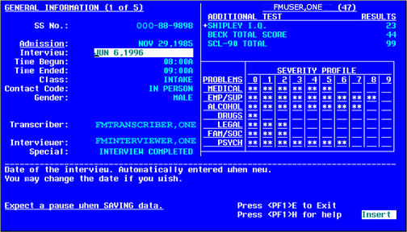

VA FileMan

ScreenMan Tutorial for Developers
Version 22.0
June 1996
Revised August 2014
Department of Veterans Affairs (VA)
Office of Information and Technology (OI&T)
Product Development (PD)
VA FileMan
ScreenMan Tutorial for Developers
Version 22.0
June 1996
Revised August 2014
Department of Veterans Affairs (VA)
Office of Information and Technology (OI&T)
Product Development (PD)
Table 1. Documentation revision history
|
Revision |
Description |
Author |
|
|
08/13/2014 |
3.0 |
Tech Edit: Reformatted document to conform to current heading and style format document. Updated all sections and procedural steps. This includes rerunning all steps to make sure procedural steps are complete and create new screen captures. Updated all organizational references, URLs, references, etc. throughout. Made document Section 508 conformant. Replaced most graphic representations of VistA screens with text screen captures throughout. Redacted names, URLs, and other data if deemed sensitive and subject to redaction. Made sure the Word version is in sync with the corresponding HTML version of this document. |
REDACTED |
|
12/28/2004 |
2.0 |
Updated documentation in compliance with new conventions for displaying TEST data. See Orientation section for details. |
REDACTED |
|
06/--/1996 |
1.0 |
Initial document. |
REDACTED |
 REF: For the
current patch history related to this software, see the Patch Module
(i.e., Patch User Menu [A1AE USER]) on FORUM.
REF: For the
current patch history related to this software, see the Patch Module
(i.e., Patch User Menu [A1AE USER]) on FORUM.
Contents
2.2 Add a DISPLAY Block to the Form
2.3 Add a Title (Caption-Only Field)
2.4 Reposition Fields on a Block
2.5 Add Data Dictionary Fields
2.7 Add an Edit Block to the Form
2.8 Add Data Dictionary Fields to the EDIT Block
2.9 Use PRINT^DDS to List Form Characteristics
3 Pages, Multiples, and Computed Fields
3.1.2.2 Add a Second Page to a Form
3.3 Add a Multiple Field (in a Repeating Block)
3.3.2.2 Add the SECONDARY MENU OPTIONS .01 Field
3.3.2.3 Add the SECONDARY MENU OPTIONS (SYNONYM) Field
3.3.2.4 Add Caption-only Field Columnar Headings to the Repeating Block
3.4 Add a Multiple Field (in a Popup Page)
3.4.2.1 Add the DIVISION Multiple Field
3.4.2.2 Add a Popup Page for the DIVISION Multiple
3.4.2.3 Add a Block to the Popup Page
3.4.2.4 Add the Fields for the DIVISION Multiple
3.5 Reposition and Resize the Popup Page
3.6 Add a ScreenMan Computed Field
4.1 Edit Fields in Other Files
4.1.2.1 Add the SERVICE/SECTION Field
4.1.2.2 Add a Block to Edit Fields
4.1.2.3 Add Data Dictionary Fields
4.2 Add Branching Logic for Fields
4.3 Use Form-Only Fields for User Input
4.4 Turn Your ScreenMan Form into an Option
4.4.2.1 Create a Run-Routine-Type Option
4.4.2.2 Create a ScreenMan-Type Option
5 Appendix AM Code and Variables in ScreenMan Forms
5.1 M code in Field Properties
5.3 Other Places for M Code in Forms
6 Appendix BTutorial Keystroke Summary
6.5 Selecting a Screen Element
6.6 Switching to Block Viewer Screen
6.7 Editing Screen Element Properties
6.8 Deleting a Page, Block, or Field
Figures
Figure 1. Relationships with blocks, pages, and forms
Figure 2. Accessing ScreenMan options
Figure 3. Creating a formSample user dialogue
Figure 5. Adding a DISPLAY blockSample user dialogue
Figure 6. Sample DISPLAY Block properties
Figure 7. Adding a caption-only fieldSample user dialogue (1 of 3)
Figure 8. Adding a caption-only fieldSample user dialogue (2 of 3)
Figure 9. Adding a Caption-Only fieldSample user dialogue (3 of 3)
Figure 10. Adding a Caption-Only fieldSample form
Figure 11. Sample repositioning fields on a block
Figure 12. Adding a Name fieldSample user dialogue
Figure 13. Adding a Name fieldConfirming correct field
Figure 14. Adding a Name fieldSample form
Figure 15. Adding a SSN fieldSample user dialogue
Figure 16. Adding a SSN fieldSample form
Figure 17. Selecting a formSample user dialogue
Figure 18. Sample completed form with added fields
Figure 19. Sample EDIT Block properties
Figure 20. Adding fieldsSample user dialogue
Figure 21. Sample form with added fields
Figure 22. Using PRINT^DDS direct-mode utilitySample user dialogue
Figure 23. Using PRINT^DDS direct-mode utilitySample form report generated
Figure 24. Sample Page Properties dialogue
Figure 25. Sample form with added EDIT block
Figure 26. Sample Page Properties dialogueLink pages
Figure 27. Adding a Repeating BlockSample user dialogue
Figure 28. Sample Repeating Block properties
Figure 29. Adding secondary menu optionsSample user dialogue
Figure 30. Adding secondary menu optionsSample form
Figure 31. Adding a DATA DICTIONARY fieldSample user dialogue
Figure 32. Adding a DATA DICTIONARY fieldSample form
Figure 33. Adding a CAPTION ONLY fieldSample user dialogue
Figure 34. Adding a field and displaying Multiple field valuesSample form
Figure 35. Adding a popup page for the DIVISION MultipleSample Page Properties dialogue
Figure 36. Adding a popup page for the DIVISION MultipleSample form
Figure 37. Adding a Block to the popup pageSample Block properties
Figure 38. Adding the fields for the DIVISION MultipleSample form (1 of 2)
Figure 39. Adding the fields for the DIVISION MultipleSample form (2 of 2)
Figure 40. Repositioning the popup pageSelecting the popup window
Figure 41. Sample resize of the popup page
Figure 42. Adding a ScreenMan Computed fieldSample Computed Field Properties dialogue
Figure 43. Adding a ScreenMan Computed fieldSample form
Figure 44. Adding a ScreenMan Computed fieldSample form
Figure 45. Adding a Block to Edit FieldsSample Block properties
Figure 46. Adding Data Dictionary fieldsSample form
Figure 47. Adding branching logicSample user dialogue
Figure 48. Adding form only parameters READ TYPESample user dialogue
Figure 49. Adding caption and branching logicSample user dialogue
Figure 51. Sample ScreenMan-type option setup
Figure 52. Sample finished, detailed ScreenMan form
Tables
Table 1. Documentation revision history
Table 2. Documentation symbol descriptions
Table 3. BRANCHING LOGIC property Variables
Table 4. DDSBR Variable Format Pieces
Table 5. ^DDS Entry PointInput Variables
Table 6. ScreenMan-defined M Code Variables
Table 7. Form Levels Used M code in Property Fields
Table 9. Screen Element Navigation
Table 10. Creating New Elements
Table 11. Switching to Block Viewer Screen
Table 12. Editing Screen Element Properties
The VA FileMan ScreenMan Tutorial for Developers is intended to help VistA developers create ScreenMan forms using VA FileMans Form Editor. The Form Editor provides a major improvement in the speed and ease of creating ScreenMan forms. The tutorial emphasizes the use of the Form Editor in creating forms.
Why produce an HTML (Hypertext Markup Language) edition of the VA FileMan ScreenMan Tutorial for Developers?
The HTML versions of the VA FileMan manuals are useful as online documentation support as you use VA FileMan. HTML manuals allow you to instantly jump (link) to specific sections or references online.
The VA FileMan HTML manuals are living documents that are continuously updated with the most current VA FileMan information (unlike paper or printed documentation). They are updated based on new versions, patches, or enhancements to VA FileMan.
Presenting manuals in an HTML format on a Web server also gives new opportunities, such as accessing embedded multimedia training material (e.g., movies) directly in the manuals themselves.
Manuals are accessible over the VA Intranet network.
The intended audience of this tutorial is all key stakeholders. The stakeholders include:
Office of Information and Technology (OI&T)VistA legacy development teams.
Information Resource Management (IRM)System administrators at Department of Veterans Affairs (VA) sites who are responsible for computer management and system security on the VistA M Servers.
Health Product Support (HPS).
There are no special legal requirements involved in the use of VA FileMan.
This manual provides an overall explanation of VA FileMan ScreenMan functionality contained in VA FileMan 22.0; however, no attempt is made to explain how the overall VistA programming system is integrated and maintained. Such methods and procedures are documented elsewhere. We suggest you look at the various VA Internet and Intranet websites for a general orientation to VistA. For example, visit the Office of Information and Technology (OI&T) VistA Development Intranet website.
 DISCLAIMER: The
appearance of external hyperlink references in this manual does not
constitute endorsement by the Department of Veterans Affairs (VA) of this
Website or the information, products, or services contained therein. The VA
does not exercise any editorial control over the information you can find
at these locations. Such links are provided and are consistent with the stated
purpose of the VA.
DISCLAIMER: The
appearance of external hyperlink references in this manual does not
constitute endorsement by the Department of Veterans Affairs (VA) of this
Website or the information, products, or services contained therein. The VA
does not exercise any editorial control over the information you can find
at these locations. Such links are provided and are consistent with the stated
purpose of the VA.
This manual uses several methods to highlight different aspects of the material:
Various symbols are used throughout the documentation to alert the reader to special information. Table 2 gives a description of each of these symbols:
Table 2. Documentation symbol descriptions
|
Description |
|
|
|
NOTE/REF: Used to inform the reader of general information including references to additional reading material. |
|
|
CAUTION/RECOMMENDATION/DISCLAIMER: Used to caution the reader to take special notice of critical information. |
|
|
TIP: Used to inform the reader of helpful tips or tricks they can use when working with VA FileMan. |
Descriptive text is presented in a proportional font (as represented by this font).
Conventions for displaying TEST data in this document are as follows:
o The first three digits (prefix) of any Social Security Numbers (SSN) begin with either 000 or 666.
o Patient and user names are formatted as follows: [Application Name]PATIENT,[N] and [Application Name]USER,[N] respectively, where Application Name is defined in the Approved Application Abbreviations document and N represents the first name as a number spelled out and incremented with each new entry. For example, in VA FileMan (FM) test patient and user names would be documented as follows: FMPATIENT,ONE; FMPATIENT,TWO; FMPATIENT,THREE; etc.
Sample HL7 messages, snapshots of computer online displays (i.e., roll-and-scroll screen or character-based screen captures/dialogues) and computer source code, if any, are shown in a non-proportional font and enclosed within a box.
Users responses to online prompts are bold typeface and highlighted in yellow (e.g., <Enter>).
Emphasis within a dialogue box is bold typeface and highlighted in blue (e.g., STANDARD LISTENER: RUNNING).
Some software code reserved/key words are bold typeface with alternate color font.
References to <Enter> within these snapshots indicate that the user should press the Enter key on the keyboard. Other special keys are represented within < > angle brackets. For example, pressing the PF1 key can be represented as pressing <PF1>.
Authors comments are displayed in italics or as callout boxes.
 NOTE: Callout
boxes refer to labels or descriptions usually enclosed within a box, which
point to specific areas of a displayed image.
NOTE: Callout
boxes refer to labels or descriptions usually enclosed within a box, which
point to specific areas of a displayed image.
All uppercase is reserved for the representation of M code, variable names, or the formal name of options, field/file names, and security keys (e.g., DIEXTRACT).
 NOTE: Other
software code (e.g., Delphi/Pascal and Java) variable names and
file/folder names can be written in lower or mixed case.
NOTE: Other
software code (e.g., Delphi/Pascal and Java) variable names and
file/folder names can be written in lower or mixed case.
This document uses Microsoft Words built-in navigation for internal hyperlinks. To add Back and Forward navigation buttons to your toolbar, do the following:
1. Right-click anywhere on the customizable Toolbar in Word 2007 or higher (not the Ribbon section).
2. Select Customize Quick Access Toolbar from the secondary menu.
3. Click the drop-down arrow in the Choose commands from: box.
4. Select All Commands from the displayed list.
5. Scroll through the command list in the left column until you see the Back command (green circle with arrow pointing left).
6. Click/Highlight the Back command and click Add to add it to your customized toolbar.
7. Scroll through the command list in the left column until you see the Forward command (green circle with arrow pointing right).
8. Click/Highlight the Forward command and click Add to add it to your customized toolbar.
9. Click OK.
You can now use these Back and Forward command buttons in your Toolbar to navigate back and forth in your Word document when clicking on hyperlinks within the document.
 NOTE: This is a
one-time setup and is automatically available in any other Word document once
you install it on the Toolbar.
NOTE: This is a
one-time setup and is automatically available in any other Word document once
you install it on the Toolbar.
How to Obtain Technical Information Online
Exported VistA M Server-based software file, routine, and global documentation can be generated through the use of Kernel, MailMan, and VA FileMan utilities.
 NOTE:
Methods of obtaining specific technical information online is indicated
where applicable under the appropriate section.
NOTE:
Methods of obtaining specific technical information online is indicated
where applicable under the appropriate section.
 REF: For further
information, see the VA FileMan Technical Manual.
REF: For further
information, see the VA FileMan Technical Manual.
VistA M Server-based software provides online help and commonly used system default prompts. Users are encouraged to enter question marksat any response prompt. At the end of the help display, you are immediately returned to the point from which you started. This is an easy way to learn about any aspect of the software.
Obtaining Data Dictionary Listings
Technical information about VistA M Server-based files and the fields in files is stored in data dictionaries (DD). You can use the List File Attributes option [DILIST] on the Data Dictionary Utilities menu [DI DDU] in VA FileMan to print formatted data dictionaries.
 REF: For details
about obtaining data dictionaries and about the formats available, see the List
File Attributes section in the File Management section in the VA FileMan Advanced
User Manual.
REF: For details
about obtaining data dictionaries and about the formats available, see the List
File Attributes section in the File Management section in the VA FileMan Advanced
User Manual.
This manual is written with the assumption that the reader is familiar with the following:
VistA computing environment:
o KernelVistA M Server software
o VA FileMan data structures, terminology, and Application Programming Interfaces (APIs)VistA M Server software
Microsoft Windows environment
M programming language
It is also assumed that the user of the tutorial has full, unrestricted programmer access in an M test account.
Readers who wish to learn more about VA FileMan should consult the following documents:
VA FileMan Release Notes (PDF format)
VA FileMan Installation Guide (PDF format)
VA FileMan Technical Manual (PDF format)
VA FileMan User Manual (PDF and HTML format)
VA FileMan Advanced User Manual (PDF and HTML format)
VA FileMan Developers Guide (PDF and HTML format)
VA FileMan ScreenMan Tutorial for Developers (this manual; PDF and HTML format)
 REF:
Zip files of the VA FileMan documentation in HTML format are located on the VA
FileMan Intranet Product website and VDL at: REDACTED
REF:
Zip files of the VA FileMan documentation in HTML format are located on the VA
FileMan Intranet Product website and VDL at: REDACTED
Using a Web browser, open the HTML documents table of contents page
(i.e., index.shtml). The VA FileMan User Manual, VA FileMan
Advanced User Manual, and VA FileMan Developers Guide are all
linked together.
VistA documentation is made available online in Microsoft Word format and in Adobe Acrobat Portable Document Format (PDF). The PDF documents must be read using the Adobe Acrobat Reader, which is freely distributed by Adobe Systems Incorporated at: http://www.adobe.com/
VistA software documentation can be downloaded from the VA Software Document Library (VDL) at: http://www.va.gov/vdl/
 REF: VA FileMan
manuals are located on the VDL at: http://www.va.gov/vdl/application.asp?appid=5
REF: VA FileMan
manuals are located on the VDL at: http://www.va.gov/vdl/application.asp?appid=5
VistA documentation and software can also be downloaded from the Health Product Support (HPS) anonymous directories.
This tutorial is intended to help VistA developers create ScreenMan forms using VA FileMans Form Editor. The Form Editor provides a major improvement in the speed and ease of creating ScreenMan forms. The tutorial emphasizes the use of the Form Editor in creating forms.
The tutorial can take 10 to 20 hours to complete, depending on your familiarity with VA FileMan.
 NOTE: Some of
the lessons in the HTML version of this tutorial come with companion movies in
Lotus ScreenCam format. The intent of including these movies is to provide a
visual demonstration of the techniques discussed in each lesson.
NOTE: Some of
the lessons in the HTML version of this tutorial come with companion movies in
Lotus ScreenCam format. The intent of including these movies is to provide a
visual demonstration of the techniques discussed in each lesson.
 REF: There is Zip
file of an HTML version of this tutorial available on the VA Software Document
Library (VDL) at: http://www.va.gov/vdl/application.asp?appid=5
REF: There is Zip
file of an HTML version of this tutorial available on the VA Software Document
Library (VDL) at: http://www.va.gov/vdl/application.asp?appid=5
After completing this tutorial, you should have the skills to create a ScreenMan interface to VA FileMan files. You will be able to:
Create a ScreenMan Form.
Add read-only fields to the form.
Add editable fields to the form.
Use the form editor to visually position fields on blocks.
Add additional pages to the form.
Edit multiples on the form (two methods).
Add ScreenMan computed fields and form-only fields to the form.
Edit fields in another files related entries.
Use branching logic to jump from one field to another.
Turn the ScreenMan form into a Menu Manager option.
This tutorial needs the following files to be present in your test account:
NEW PERSON (#200)Primary file; you add a ScreenMan form to it.
OPTION (#19)Form navigates to edit fields in this file.
SERVICE/SECTION (#49)Form navigates to edit fields in this file.
This is a hands-on tutorial, requiring a safe (i.e., non-production) M account in which you can build a ScreenMan form.
The following software must be installed in the test account you use for the tutorial:
VA FileMan 22.0
Kernel 8.0
This tutorial needs the following files to be present in your test account:
NEW PERSON (#200)Primary file used by the tutorial; you add a ScreenMan form to it.
OPTION (#19)ScreenMan form navigates to edit fields in this file.
SERVICE/SECTION (#49)ScreenMan form navigates to edit fields in this file.
Kernel provides access to the ScreenMan options, as well as providing the files for which you build a ScreenMan form during the tutorial.
You need to be granted the following privileges in the M test account used for the tutorial:
The XUSCREENMAN security key.
A File Manager Access codeof at-sign (@).
It is further assumed that you have full, unrestricted programmer access in this test account, including the ability to run any option and to add options to your menu tree without supervision.
Each tutorial user should choose a unique namespace beginning with Z, concatenated with two or three other letters (e.g., ZYXU). Use this namespace as the beginning of the names for all forms and blocks that you create during this tutorial. Using your namespace protects the system you are using from having existing forms and blocks overwritten. This namespace is referred to as Zxxx during the tutorial.
This section of the tutorial shows you how to start building a form. It demonstrates:
Initial building of a form.
How to add blocks to a form.
How to add simple fields to a block.
In this section of the tutorial, you will do the following:
Create a Form.
Add a DISPLAY Block to the Form.
Add a Title (Caption-Only Field).
Reposition Fields on a Block.
Add Data Dictionary Fields.
Run the Form.
Add an Edit Block to the Form.
Add Data Dictionary Fields to the EDIT Block.
Use PRINT^DDS to List Form Characteristics.
ScreenMan is a tool for screen-oriented, form-oriented data entry into VA FileMan files. The Form Editor tool was introduced with VA FileMan 21.0. It assists developers in creating ScreenMan interfaces. This tutorial concentrates on creating forms with the Form Editor.
In this tutorial, you will:
Create a form to edit entries in the NEW PERSON file (#200).
 NOTE:
You will not edit every field in the NEW PERSON file (#200), because that could be a big form!
NOTE:
You will not edit every field in the NEW PERSON file (#200), because that could be a big form!
Add selected fields from the NEW PERSON file (#200)to the form, in such a way that you get experience using a variety of the features ScreenMan.
At the end of the tutorial, you will have built a form that is very similar to Kernels Edit User Characteristics option(although your form edits a different set of fields).
When you create a form, a first page is created for the form by default. You cannot place fields directly on either a form or page; you must create blocks first. This is because the only place fields can be placed on is a block. A block provides a place to logically group a set of fields; you might edit a Multiples fields in one block on one page, and the top-level fields for the file on a block on another page. You can also designate whether the fields on any given block are display-only or editable.
Figure 1 shows the relationships with blocks, pages, and forms:
Figure 1. Relationships with blocks, pages, and forms

Thus, to create a form, the first step is to create the form itself. The first page of the form is created automatically when the form is created. However, before you can add fields to the form, you must add at least one block to the form. Adding a block to the form you create will be your second step.
The most basic element in a ScreenMan form is the form itself. To create the form, you use a tool called the Form Editor. You can invoke the Form Editor from the following:
Using the Edit/Create a Form Option[DDS EDIT/CREATE A FORM]
Using the Direct Mode Utility
From the VA FileMan main menu[DIUSER], do the following:
1. At the Select VA FileMan Option: prompt, select Other Options menu[DIOTHER].
2. At the Select Other Options Option: prompt, select the ScreenMan main menu[DDS SCREEN MENU].
 NOTE:
This option is locked with the XUSCREENMAN security key.
NOTE:
This option is locked with the XUSCREENMAN security key.
3. At the Select ScreenMan Option: prompt, select the Edit/Create a Form option[DDS EDIT/CREATE A FORM].
Figure 2. Accessing ScreenMan options
Select Systems Manager Menu Option: FM1 <Enter> VA FileMan
VA FileMan Version 22.0
Enter or Edit File Entries
Print File Entries
Search File Entries
Modify File Attributes
Inquire to File Entries
Utility Functions ...
Data Dictionary Utilities ...
Transfer Entries
Other Options ...
Select VA FileMan Option: OTHER <Enter> Options
ScreenMan ...
Statistics
VA FileMan Management ...
Data Export to Foreign Format ...
Import Data
Browser
Select Other Options Option: SCREEN <Enter> Man
Edit/Create a Form
Run a Form
Delete a Form
Purge Unused Blocks
Select ScreenMan Option: EDIT <Enter> /Create a Form
EDIT/CREATE FORM FOR WHAT FILE: NEW PERSON//
Alternatively, you can invoke the Form Editor from programmer mode using the following direct-mode utility:
D ^DDGF
To create the first form, do the following:
1. Invoke the Form Editor, using either the menu option (see Figure 2) or the direct-mode utility (see Section 2.1.1.2.2).
2. The first thing you are asked is for what file to create a form. Since you are creating a form to edit the NEW PERSON file (#200), enter NEW PERSON.
3. You are now asked for a form name. Entering two question marks (??) lists current forms defined for the NEW PERSON file (#200). Enter a new unique form name using your student namespace concatenated with EDIT. For example, if your namespace is ZYXU, add a form called ZYXU EDIT.
 NOTE:
From hereon in, the namespace part of a name is referred to as Zxxx in
the tutorial.
NOTE:
From hereon in, the namespace part of a name is referred to as Zxxx in
the tutorial.
Figure 3. Creating a formSample user dialogue
Select ScreenMan <TEST ACCOUNT> Option: EDIT <Enter> /Create a Form
EDIT/CREATE FORM FOR WHAT FILE: PERSON CLASS// NEW PERSON <Enter>
(392 entries)
Select FORM: Zxxx EDIT
Are you adding Zxxx EDIT as a new FORM? No// YES <Enter> (Yes)
4. Once you select a name for the form, you are placed in the ScreenMans Form Editor:
Figure 4. Sample blank form
_____________________________________________________________________________
File: NEW PERSON (#200) R1,C1
Form: Zxxx EDIT
Page: 1 (Page 1)
<PF1>Q=Quit <PF1>E=Exit <PF1>S=Save <PF1>V=Block Viewer <PF1>H=Help
 NOTE: In
subsequent tutorial sections, you will build on this form using the Form
Editor, gradually creating a robust interface to the NEW PERSON file (#200).
NOTE: In
subsequent tutorial sections, you will build on this form using the Form
Editor, gradually creating a robust interface to the NEW PERSON file (#200).
5. Press <PF1>E to save the new form and exit the Form Editor.
 REF: In Section 2.2 you will add a DISPLAY block to the new form.
REF: In Section 2.2 you will add a DISPLAY block to the new form.
In this lesson you learned how to create a ScreenMan form using the Form Editor.
The Form Editor can be invoked with the Edit/Create a Form option, and also with the direct-mode utility: D ^DDGF.
The form you created in Section 2.1 has a page (page 1 is created by default), but no blocks yet. In order to add any fields to the form, you need to place a block on the form. Thus, the first thing to do with your form is to add a block.
There are two types of blocks:
EDITAllows fields to be changed by the user.
DISPLAYAllows fields to be displayed but not changed by the user.
The cursor position, at the time you add a block, defines the region of the block. The region of the page covered by the block starts at the cursor position, and moves down and to the right. Thus, if the block covers only the bottom half of the page, you are only able to place fields on the bottom-half of that page (for that block only).
Reusing BlocksYou have a multi-page form, for example, and want the same header information on each page of the form. You can create a block for the header information only, and reuse the same block on each page of the form. Each page would then need an additional block for the fields unique to each page.
Separate BlocksIf fields on the same page come from different data dictionary file numbers (either from a Multiple, or from another file), you need to use separate blocks. You can only place fields from a single data dictionary file number on any given block.
 NOTE: Both
of these situations are covered in subsequent sections in this tutorial.
NOTE: Both
of these situations are covered in subsequent sections in this tutorial.
Display-only BlocksYou can make a field on an EDIT block display-only by individually setting that fields DISABLE EDITING property. You can have a large number of display-only fields, as well as some fields to edit, however. In this case, it can be easier to place the display-only fields on their own DISPLAY block, rather than set each fields DISABLE EDITING property.
In this section, you will add a single block to the page, and make it a DISPLAY block.
To add a DISPLAY block, do the following:
1. In the Form Editor, with your Zxxx EDIT form loaded, use the arrow keys to position the cursor at row 1, column 1 if it is not already at that position. This is the top-left corner on the form.
 TIP: Cursor
Position:
TIP: Cursor
Position:
The current cursor position is always displayed at the lower-right corner of
the Form Editor screen.
2. At the current cursor position (row 1, column 1), press <PF2>B to add a block to the form at the cursor.
3. When asked to select a new block name, enter your namespace concatenated with MAIN 1 (e.g., Zxxx MAIN 1):
Figure 5. Adding a DISPLAY blockSample user dialogue
R,,,,,,,,,,,,,,,,,,,,,,,,,,,,,,,,,,,,,,,,,,,,,,,,,,,,,,,T
. .
. Select NEW BLOCK NAME: Zxxx MAIN 1 .
. .
F,,,,,,,,,,,,,,,,,,,,,,,,,,,,,,,,,,,,,,,,,,,,,,,,,,,,,,,G
______________________________________________________________________
COMMAND: Press <PF1>H for help Insert
4. At the Are you adding Zxxx MAIN 1 as a new BLOCK? No// prompt, enter YES.
5. At the Are you adding Zxxx MAIN 1 as a new block on this page? prompt, enter YES.
6. You are now given a chance to enter the properties for the Zxxx MAIN 1 block.
a. Change TYPE OF BLOCK to DISPLAY.
b. Verify BLOCK ORDER is 1.
c. Accept the other defaults.
The block properties should match those shown in Figure 6:
Figure 6. Sample DISPLAY Block properties
------------------- Block Properties Stored in FORM File ------------------
| |
| BLOCK NAME: Zxxx MAIN 1 BLOCK ORDER: 1 |
| TYPE OF BLOCK: EDIT OTHER PARAMETERS... |
| |
| POINTER LINK: |
| PRE ACTION: |
| POST ACTION: |
| |
|----------------- Block Properties Stored in BLOCK File ------------------|
| |
| NAME: Zxxx MAIN 1 DESCRIPTION (WP): |
| DD NUMBER: 200 DISABLE NAVIGATION: |
| |
| PRE ACTION: |
| POST ACTION: |
---------------------------------------------------------------------------
______________________________________________________________________________
COMMAND: Press <PF1>H for help Insert
7. Press <PF1>E to save the new block.
Any fields placed on this block are read-only, since this is a DISPLAY block; in the next section, you will add several fields to the block.
 TIP: Seeing Blocks, and
Editing Block Properties:
TIP: Seeing Blocks, and
Editing Block Properties:
To see what blocks are on a page, press <PF1>V to switch to the
Block Viewer screen. The name of each block is displayed as a caption on the
page.
To move the position of a block, do the following:
1. Select the block.
2. Move the cursor to the label of the block.
3. Press Spacebar or Enter.
4. Move it with the arrow keys,
5. Deselect it by pressing Spacebar or Enter again.
To edit the properties of the block, do the following:
1. Move the cursor to the blocks caption.
2. Select it by pressing Spacebar or Enter.
3.
Press PF4 to edit the properties of the block.
When you are done working with blocks and want to exit the Block Viewer screen,
press <PF1>V again to switch back to the main Form Editor screen.
To add an EDIT or DISPLAY block to a form:
1. Press <PF2>B.
Select the block properties.
The position your cursor is at when you press <PF2>B defines the regions of the block. You need to add at least one block to every page, because fields must be placed on blocks (not directly on the page).
Once you have added a block to the form, you can start adding fields to the block. First, you add a caption to the block, displaying the title NEW PERSON EDIT at the top of the form.
To add a caption-only field to the block, do the following:
1. Using the arrow keys, position the cursor at row 1, column 1.
At the current cursor position:
a. Press <PF2>F. This brings up a dialogue similar to Figure 7:
Figure 7. Adding a caption-only fieldSample user dialogue (1 of 3)
----------------------------------------------
| |
| Select BLOCK: Zxxx MAIN 1 |
| FIELD ORDER: 1 |
| FIELD TYPE: DATA DICTIONARY FIELD |
| |
----------------------------------------------
______________________________________________________________________________
COMMAND: Press <PF1>H for help Insert
b. Accept the defaults for BLOCK and FIELD ORDER.
c. Change the FIELD TYPE to CAPTION ONLY.
d. Press <PF1>E to save the settings and exit this dialogue.
Figure 8. Adding a caption-only fieldSample user dialogue (2 of 3)
----------------------------------------------
| |
| Select BLOCK: Zxxx MAIN 1 |
| FIELD ORDER: 1 |
| FIELD TYPE: CAPTION ONLY |
| |
----------------------------------------------
______________________________________________________________________________
COMMAND: Press <PF1>H for help Insert
Once you save the initial field settings, the Form Editor presents the Caption-Only Field Properties dialogue (Figure 9). Set the properties as follows:
Figure 9. Adding a Caption-Only fieldSample user dialogue (3 of 3)
---------------------- Caption-Only Field Properties -------------------
| |
| FIELD ORDER: 1 |
| CAPTION: NEW PERSON EDIT |
| UNIQUE NAME: |
| |
| EXECUTABLE CAPTION: |
| CAPTION COORDINATE: 1,1 |
------------------------------------------------------------------------
Press <PF1>E to save the field properties and exit this dialogue.
The form should now have the caption NEW PERSON EDIT, left-justified on the first line:
Figure 10. Adding a Caption-Only fieldSample form
NEW PERSON EDIT
______________________________________________________________________________
File: NEW PERSON (#200) R1,C1
Form: Zxxx EDIT
Page: 1 (Page 1)
<PF1>Q=Quit <PF1>E=Exit <PF1>S=Save <PF1>V=Block Viewer <PF1>H=Help
 TIP: Re-Editing
Field Properties:
TIP: Re-Editing
Field Properties:
To re-edit the properties of a field:
1. Move the cursor to the fields caption.
2. Press Spacebar or Enter to select the field.
3. Press PF4 to edit the properties.
Press <PF2>F to add fields to a block and fill in the properties.
To add a caption to a block, choose a field type of CAPTION ONLY.
In Section 2.3, you added a caption field to the first block. Now, use the Form Editors visual editing capabilities to reposition the caption field on the block.
To reposition the caption field on the block, do the following:
1. Select the field.
2. Move it.
3. De-select the field.
To reposition fields on a block, do the following:
1. In the Form Editor, use the arrow keys to position the cursor at the first letter in the caption NEW PERSON EDIT.
Press Spacebar or Enter with the cursor in the field caption to select the field; this highlights the entire field.
Move the field:
a. With the field highlighted, move it by pressing the arrow keys.
b.
Move the field to the center of row 1.
The leftmost character of the field should be at row 1, column 32; you can tell
by the R1,C32 indicator in the lower-right corner of the window: as shown in Figure 11:
Figure 11. Sample repositioning fields on a block
NEW PERSON EDIT
______________________________________________________________________________
File: NEW PERSON (#200) R1,C32
Form: Zxxx EDIT
Page: 1 (Page 1)
<PF1>Q=Quit <PF1>E=Exit <PF1>S=Save <PF1>V=Block Viewer <PF1>H=Help
De-select the field. With the field highlighted (and in position), press Spacebar or Enter to deselect (and drop) the field into place.
 TIP: Moving Screen
Elements:
TIP: Moving Screen
Elements:
There are other shortcut keystrokes that you can use when moving screen
elements (e.g., fields). These keystrokes (move field to top of screen,
move field to bottom of screen, etc.) are described in the ScreenMan section
in the VA FileMan User Manual.
The Form Editor provides visual field positioning capabilities. This lets you quickly position fields on blocks, which helps you build visually attractive forms very quickly.
At this point, you have added one field, a caption-only field, to the first block. Now, you will add the following data dictionary fields to the DISPLAY-only block from the NEW PERSON file (#200):
NAME
SSN
Because these fields are placed on a DISPLAY-only block, the values are displayed to the form user, but are not editable.
To add the NAME field, do the following:
1. Position the cursor at the beginning of the third line on the screen, using the arrow keys:
a. Press <PF2>F to add a field to the block.
b. Set the field up as shown in Figure 12:
Figure 12. Adding a Name fieldSample user dialogue
----------------------------------------------
| |
| Select BLOCK: Zxxx MAIN 1 |
| FIELD ORDER: 2 |
| FIELD TYPE: DATA DICTIONARY FIELD |
| |
----------------------------------------------
c. Press <PF1>E to save these field settings.
2. The Form Editor presents the Data Dictionary Field Properties dialogue. For FIELD, choose NAME.
3. Press <PF1>E to save the field properties.
4. Since there are two fields that begin with NAME, choose option 1, as shown in Figure 13:
Figure 13. Adding a Name fieldConfirming correct field
-------------------- Data Dictionary Field Properties ---------------------
| |
| FIELD ORDER: 2 FIELD: NAME |
| OTHER PARAMETERS... SUPPRESS COLON AFTER CAPTION? |
| UNIQUE NAME: |
| |
| CAPTION: |
| DEFAULT: |
| EXECUTABLE CAPTION: |
| EXECUTABLE DEFAULT: |
| |
| BRANCHING LOGIC: |
| PRE ACTION: |
| POST ACTION: |
| POST ACTION ON CHANGE: |
---------------------------------------------------------------------------
______________________________________________________________________________
1 NAME
2 NAME COMPONENTS
Choose 1-2 or ^ to quit: 1
5. The Form Editor returns you to the form screen, and you should see the NAME field on the screen (Figure 14):
Figure 14. Adding a Name fieldSample form
NEW PERSON EDIT
NAME: ___________________________________
______________________________________________________________________________
File: NEW PERSON (#200) R3,C1
Form: Zxxx EDIT
Page: 1 (Page 1)
<PF1>Q=Quit <PF1>E=Exit <PF1>S=Save <PF1>V=Block Viewer <PF1>H=Help
To add the SSN field, do the following:
1. Position the cursor on the middle of the third line after the NAME field:
a. Press <PF2> F to add the SSN field.
b. Set it up as shown in Figure 15:
Figure 15. Adding a SSN fieldSample user dialogue
----------------------------------------------
| |
| Select BLOCK: Zxxx MAIN 1 |
| FIELD ORDER: 3 |
| FIELD TYPE: DATA DICTIONARY FIELD |
| |
----------------------------------------------
c. Press <PF1>E to save these field settings.
The Form Editor presents the Data Dictionary Field Properties dialogue. For FIELD, choose SSN.
Press <PF1>E to save the field properties.
The Form Editor returns you to the form screen. You should see the SSN field on the block:
Figure 16. Adding a SSN fieldSample form
NEW PERSON EDIT
NAME: ___________________________________ SSN: _________
______________________________________________________________________________
File: NEW PERSON (#200) R3,C43
Form: Zxxx EDIT
Page: 1 (Page 1)
<PF1>Q=Quit <PF1>E=Exit <PF1>S=Save <PF1>V=Block Viewer <PF1>H=Help
If you need to, you can re-position the fields in the same way that you re-positioned the NEW PERSON EDIT caption in Section 2.4.2.
To reposition fields, do the following:
1. Select a field:
a. Move the cursor to the field caption.
b. Press Spacebar or Enter.
Use the arrow keys to move the field.
Press Enter to drop the field in its new location.
 TIP: Positioning Data
Dictionary Fields: Caption Portion and Data Field Portion:
TIP: Positioning Data
Dictionary Fields: Caption Portion and Data Field Portion:
Data dictionary fields have two parts, caption and data field, which can be
positioned independently. If you position the cursor under the caption of a
data dictionary field and press Spacebar or Enter, you select the
caption and data field parts together. However, if you position the cursor
under the data field (the underlined portion) and then select, you select the
data field only, and can position it independently of the field caption. In
this tutorial, you should always move the caption and data field together.
To delete a field, do the following:
1. Select a field:
a. Move the cursor to the field caption.
b. Press Spacebar or Enter.
Press PF4 to edit the properties of the element.
At the Field Order: prompt, enter an at-sign (@).
At the Are you sure you want to delete this entire Subrecord (Y/N)? prompt, enter YES.
 CAUTION:
Deletions are done immediately! Exiting without saving will not
restore deleted records.
CAUTION:
Deletions are done immediately! Exiting without saving will not
restore deleted records.
Adding data dictionary fields is similar to adding caption-only fields; you simply need to choose what field you want to add.
At this point, you have added one block and three fields to the form. To see what the form looks like so far from a users point of view, use the VA FileMan Run a Form option(on the same menu as the Edit/Create a Form option).
To see what the form looks like, do the following:
1. In the Form Editor screen, press <PF1>E to save the form you have been working on and exit.
Choose the Run a Form option:
a. Run a form from the NEW PERSON file (#200).
b. Choose the form you have been building.
Figure 17. Selecting a formSample user dialogue
Edit/Create a Form
Run a Form
Delete a Form
Purge Unused Blocks
Select ScreenMan <TEST ACCOUNT> Option: RUN <Enter> a Form
RUN FORM FROM WHAT FILE: NEW PERSON// <Enter>
Select FORM: Zxxx EDIT <Enter> Zxxx EDIT
(Jun 24, 2014@09:34)User #8 File #200
Select NEW PERSON NAME: FMUSER,ONE <Enter> OF TECHNICAL WRITER
NEW PERSON EDIT
Your form should look something like Figure 18.
 NOTE:
You cannot edit the NAME or SSN fields, which reside on a DISPLAY block.
NOTE:
You cannot edit the NAME or SSN fields, which reside on a DISPLAY block.
Figure 18. Sample completed form with added fields
NEW PERSON EDIT
NAME: FMUSER,ONE SSN: 000323232
______________________________________________________________________________
COMMAND: Press <PF1>H for help Insert
Use the Run a Form optionto run and test your forms.
In previous sections, you added fields to a DISPLAY-type block. Because of the block they were added to, these fields are read-only. In this section, you will add an EDIT-type block to the form; this lets you add fields to the form that the user can actually edit.
To add the EDIT block, do the following:
1. Invoke the Form Editor again, and load the Zxxx EDIT form.
In the Form Editor, use the arrow keys to position the cursor at row 5, column 1 on the form.
Press <PF2>B to add a block to the form at the cursor position (row 5, column 1).
When asked to select a new block name, enter your namespace concatenated with MAIN 2 (e.g., Zxxx MAIN 2).
At the Are you adding Zxxx MAIN 2 as a new block? No// prompt, enter YES.
At the Are you adding Zxxx MAIN 2 as a new block on this page? prompt, enter YES. You are now given a chance to enter the properties for the Zxxx MAIN 2 block.
In the Block Properties Stored I n a FORM File dialogue (see Figure 19), verify the following data:
a. BLOCK ORDER should be 2.
b. TYPE OF BLOCK should be EDIT.
c. Accept the other defaults.
d. Press <PF1>E to save the new block and exit.
Figure 19. Sample EDIT Block properties
---------------- Block Properties Stored in FORM File --------------------
| |
| BLOCK NAME: Zxxx MAIN 2 BLOCK ORDER: 2 |
| TYPE OF BLOCK: EDIT OTHER PARAMETERS... |
| |
| POINTER LINK: |
| PRE ACTION: |
| POST ACTION: |
| |
|----------------- Block Properties Stored in BLOCK File ------------------|
| |
| NAME: Zxxx MAIN 2 DESCRIPTION (WP): |
| DD NUMBER: 200 DISABLE NAVIGATION: |
| |
| PRE ACTION: |
| POST ACTION: |
--------------------------------------------------------------------------
______________________________________________________________________________
COMMAND: Press <PF1>H for help Insert
 TIP: Editing Block
Properties at a Later Time.
TIP: Editing Block
Properties at a Later Time.
To edit a blocks properties at a later time:
1. Press <PF1>V to go to the Block Viewer screen.
2. Select the block whose properties you want to edit by positioning the cursor over it and pressing Spacebar or Enter.
3. Press PF4 to edit the blocks properties in the Block Properties dialogue.
4. Once you are done editing properties, save the changes and exit by pressing <PF1>E, or quit without saving by pressing <PF1>Q.
5. Once you are back in the Block Viewer screen, press <PF1>V to return to the normal Form Editor screen.
To delete a block:
1. Edit the blocks properties.
2. Delete the block by entering an at-sign (@) in the BLOCK NAME field.
Adding an EDIT block to a form enables the editing of any data dictionary fields placed on the EDIT-type block.
In Section 2.7, you added an EDIT-type block to the form. Now, you can add some data dictionary fields to the EDIT block. This means that the user is actually able to edit data in the NEW PERSON file (#200)when they use the form.
In this section, you will add the following fields to the edit block (Zxxx MAIN 2), in the order listed below:
1. PHONE (HOME)
PHONE #3
PHONE #4
OFFICE PHONE
AUTO MENU
INITIAL
NICK NAME
PREFERRED EDITOR
TYPE-AHEAD
To add each field, do the following:
1. Position the cursor somewhere on the Zxxx MAIN 2 block, which is anywhere from row 5 to the bottom of the form; roughly where you would like to place the field.
Press <PF2>F to add the individual field.
When the Form Editor asks for block, make sure you choose Zxxx MAIN 2:
a. Accept the default FIELD ORDER.
b. Make sure the FIELD TYPE is DATA DICTIONARY FIELD, as shown in Figure 20.
Figure 20. Adding fieldsSample user dialogue
----------------------------------------------
| |
| Select BLOCK: Zxxx MAIN 2 |
| FIELD ORDER: 1 |
| FIELD TYPE: DATA DICTIONARY FIELD |
| |
----------------------------------------------
Press <PF1>E to save and exit this dialogue.
When you reach the Data Dictionary Field Properties dialogue:
a. Choose the appropriate field by entering the field name in the FIELD property. Enter one of the following fields (in the order listed):
PHONE (HOME)
PHONE #3
PHONE #4
OFFICE PHONE
AUTO MENU
INITIAL
NICK NAME
PREFERRED EDITOR
TYPE-AHEAD
b. Press <PF1>E to save the new field.
c. Repeat Steps 1 through 5b for each of the fields listed in Step 5a.
After you have added each of the fields to the block, arrange the fields so that their captions are all right-aligned (i.e., colons terminating each caption should be in a vertical line). Use the Form Editors visual capabilities to do this:
a. As you did before with the NEW PERSON EDIT caption, select each field:
i. Place the cursor over the first letter of the field caption.
ii. Press Spacebar or Enter. This selects (highlights) the field.
b. Use the arrow keys to move the field.
c. Press Spacebar or Enter again to drop the field into place and deselect the field.
By default, the edit order of the fields on the form is the same order in which you add fields to the form. You can change the field order on the block at a later time, however.
Press <PF1>E to exit the Form Editor.
Choose the Run a Form optionto run and test the form. The form should now look like Figure 21 (with sample data):
Figure 21. Sample form with added fields
NEW PERSON EDIT
NAME: FMUSER,ONE SSN: 000323232
PHONE (HOME): 555-555-5555
PHONE #3:
PHONE #4:
OFFICE PHONE: 555-555-5555
AUTO MENU: YES, MENUS GENERATED
INITIAL: OF
NICK NAME: ONE
PREFERRED EDITOR: SCREEN EDITOR - VA FILEMAN
TYPE-AHEAD: ALLOWED
______________________________________________________________________________
COMMAND: Press <PF1>H for help Insert
a. Test the field order. Starting at the initial field that ScreenMan places you in, press Enter at each field; you should move to the next field down on the form, until you traverse all fields and are placed at the COMMAND prompt.
b. If the field order is not correct, however, you can return to the Form Editor and change the field order for any field.
To change the field order for any field, do the following:
1. Select the field whose order you want to change:
a. Move the cursor to the field caption.
b. Press Spacebar or Enter to select the field.
Press PF4 to edit the field properties.
Change the field order to a different number (decimal fractions are allowed).
Alternatively, you can reset the field order of all fields to be left-to-right, top-to-bottom.
To reset the field order of all fields to left-to-right, top-to-bottom, do the following:
1. From the Form Editor, go to the Block Viewer screen by pressing <PF1>V.
Select the block in question:
a. Move cursor to it.
b. Press Spacebar or Enter to select the block.
Press <PF1>O to reorder the field sequence.
Press Spacebar or Enter again to de-select the block.
Press <PF1>V to return to the normal Form Editor screen.
 TIP: Display Width vs.
Actual Width for Fields:
TIP: Display Width vs.
Actual Width for Fields:
Some fields are longer than a form is wide; fields can be up to 245 characters
in length. How can you edit a field like this in a ScreenMan form, which is
only 80 characters wide? The answer is that when you place a field like this on
a form, you can set the fields display width by setting its DATA LENGTH
property. You could set its DATA LENGTH to be 75, for example. Then, when the user
runs the form, the field is displayed in a 75-character-wide window. To see and
edit the entire field, the user can press <PF1>Z; this opens a
large edit area at the bottom of the screen.
You can use this technique even with fields that fit within the width of your
form. For example, you might have a field that is 60 characters in length, but
set it so that it only takes up 30 characters when displayed on your form (by
setting its DATA LENGTH to 30).
 CONGRATULATIONS:
Making an interface to edit fields in the NEW PERSON file (#200) was as easy as
that!
CONGRATULATIONS:
Making an interface to edit fields in the NEW PERSON file (#200) was as easy as
that!
To let users edit data in a VA FileMan file, you can add data dictionary fields to an Edit-type block on the form. The field order (when the user traverses fields by pressing Enter) is, by default, the order you add fields to the form. You can change the field order at a later time, if necessary.
At this point, you have added several blocks and a number of fields to the form.
When you are working with forms, you can generate a report on your form so that you can review your forms characteristics. ScreenMan provides a way to do this using the following direct-mode utility:
D PRINT^DDS
This lists all characteristics of a form. It lists the properties of the form itself and all properties of the blocks and fields used on the form.
To generate a report on your form so that you can review your forms characteristics, do the following:
1. From the M programmer prompt, run PRINT^DDS.
Compare the output for your form to the output listed below. The printout for your form thus far should correspond to the printout listed in Figure 22:
Figure 22. Using PRINT^DDS direct-mode utilitySample user dialogue
TEST ACCOUNT>D PRINT^DDS
Select FORM: ZXXX EDIT <Enter> (Jun 24, 2014@09:34)User #8 File #200
Start each page of the form on a new page? Yes// NO
DEVICE: HOME// <Enter> Network
Figure 23. Using PRINT^DDS direct-mode utilitySample form report generated
FORM LISTING - Zxxx EDIT (#78)
FILE: NEW PERSON (#200) JUN 24, 2014 11:37 PAGE 1
------------------------------------------------------------------------------
PRIMARY FILE: 200 READ ACCESS: @
DATE CREATED: JUN 24, 2014@09:34 WRITE ACCESS: @
DATE LAST USED: JUN 24, 2014@11:15 CREATOR: 8
Page Page
Number Properties
------ ----------
1 Page 1
PAGE COORDINATE: 1,1
Block Block
Order Properties (Form File)
----- ----------------------
1 Zxxx MAIN 1 (#327)
TYPE OF BLOCK: EDIT
BLOCK COORDINATE: 1,1
Block Properties (Block File)
-----------------------------
DATA DICTIONARY NUMBER: 200
Field Field
Order Properties
----- ----------
1 FIELD TYPE: CAPTION ONLY
CAPTION: NEW PERSON EDIT
CAPTION COORDINATE: 1,32
2 FIELD TYPE: DATA DICTIONARY FIELD
CAPTION: NAME
FIELD: .01
CAPTION COORDINATE: 3,1
DATA COORDINATE: 3,7
DATA LENGTH: 35
3 FIELD TYPE: DATA DICTIONARY FIELD
CAPTION: SSN
FIELD: 9
CAPTION COORDINATE: 3,43
DATA COORDINATE: 3,48
DATA LENGTH: 9
2 Zxxx MAIN 2 (#328)
TYPE OF BLOCK: EDIT
BLOCK COORDINATE: 5,1
Block Properties (Block File)
-----------------------------
DATA DICTIONARY NUMBER: 200
Field Field
Order Properties
----- ----------
1 FIELD TYPE: DATA DICTIONARY FIELD
CAPTION: PHONE (HOME)
FIELD: .131
CAPTION COORDINATE: 1,6
DATA COORDINATE: 1,20
DATA LENGTH: 20
2 FIELD TYPE: DATA DICTIONARY FIELD
CAPTION: PHONE #3
FIELD: .133
CAPTION COORDINATE: 2,10
DATA COORDINATE: 2,20
DATA LENGTH: 20
3 FIELD TYPE: DATA DICTIONARY FIELD
CAPTION: PHONE #4
FIELD: .134
CAPTION COORDINATE: 3,10
DATA COORDINATE: 3,20
DATA LENGTH: 20
4 FIELD TYPE: DATA DICTIONARY FIELD
CAPTION: OFFICE PHONE
FIELD: .132
CAPTION COORDINATE: 4,6
DATA COORDINATE: 4,20
DATA LENGTH: 20
5 FIELD TYPE: DATA DICTIONARY FIELD
CAPTION: AUTO MENU
FIELD: 200.06
CAPTION COORDINATE: 5,9
DATA COORDINATE: 5,20
DATA LENGTH: 20
6 FIELD TYPE: DATA DICTIONARY FIELD
CAPTION: INITIAL
FIELD: 1
CAPTION COORDINATE: 6,11
DATA COORDINATE: 6,20
DATA LENGTH: 5
7 FIELD TYPE: DATA DICTIONARY FIELD
CAPTION: NICK NAME
FIELD: 13
CAPTION COORDINATE: 7,9
DATA COORDINATE: 7,20
DATA LENGTH: 10
8 FIELD TYPE: DATA DICTIONARY FIELD
CAPTION: PREFERRED EDITOR
FIELD: 31.3
CAPTION COORDINATE: 8,2
DATA COORDINATE: 8,20
DATA LENGTH: 30
9 FIELD TYPE: DATA DICTIONARY FIELD
CAPTION: TYPE-AHEAD
FIELD: 200.09
CAPTION COORDINATE: 9,8
DATA COORDINATE: 9,20
DATA LENGTH: 11
TEST ACCOUNT>
Use the PRINT^DDS direct mode utilityto list the characteristics of a form.
 CONGRATULATIONS: This is the end of the first section of the
hands-on tutorial! You have:
CONGRATULATIONS: This is the end of the first section of the
hands-on tutorial! You have:
Created a ScreenMan form.
Linked it to a file.
Added both display-only and editable fields to the form.
If you want to try out some of the more advanced features of ScreenMan, continue on to the next section of this tutorial!
 NOTE:
This section continues to build on the form you designed in Section 2.
NOTE:
This section continues to build on the form you designed in Section 2.
This section demonstrates some of the more typical things a developer might want to do with a form, beyond the adding of simple fields to a single page. It shows how to add pages to a form, and shows two ways of editing Multiple fields on a form. Also, it shows how to enhance the presentation of information with ScreenMan computed fields. You will do the following:
Add a second page to your form.
Edit a Multiple field using a repeating block.
Edit a Multiple field using a popup page.
Resize and reposition the popup page.
Add a ScreenMan computed field, enhancing the presentation of the Multiple in the repeating block.
Forms can have more than one page. They can have many pages, each page with its own blocks. Some reasons to use more than one page in a form are:
There are too many fields to fit on one page.
You want to edit fields in a different file or in a Multiple.
You want to display information in a popup page.
To add a page to a form, do the following:
1. Invoke the Form Editor, using either the menu option (see Figure 2) or the direct-mode utility (see Section 2.1.1.2.2).
The first thing you are asked is for what file to create a form. Since we are creating a form to edit the NEW PERSON file (#200), enter NEW PERSON.
You are now asked for a form name. Entering two question marks lists current forms defined for the NEW PERSON file (#200). For this section, continue editing the form you created in Section 2.
 NOTE:
From hereon in, the namespace part of a name is referred to as Zxxx in
the tutorial.
NOTE:
From hereon in, the namespace part of a name is referred to as Zxxx in
the tutorial.
Once you select a name for the form, you are placed in the ScreenMans Form Editor.
Press <PF2>P to add a page.
Choose a unique page number for the page.
In the new pages properties, fill in a page number for both the NEXT PAGE and PREVIOUS PAGE properties. This tells ScreenMan what pages to go to when the user moves backwards or forwards from the page.
Adjust the PREVIOUS PAGE and NEXT PAGE properties of other pages to make sure that the total sequence of pages is adjusted to include the new page.
Add a block to the new page. Every page should have at least one block.
To add a second page to a form, do the following:
1. In the Form Editor, load the Zxxx EDIT USER form.
2. Press <PF2>P to add a page.
3. In a popup window, you are asked for the NEW PAGE NUMBER. In general, you should number the pages in your form sequentially, so it is easy to keep track of them. Since this is the second page in the form, enter 2.
4. At the Are you adding Page 2 as a new page on this form? prompt, enter YES.
5. The Form Editor presents a Page Properties dialogue letting you edit the characteristics of the new page.
a. Enter 1 for the NEXT PAGE and PREVIOUS PAGE properties.
b. Accept the defaults for all other properties.
The page properties should match those in Figure 24:
Figure 24. Sample Page Properties dialogue
------------------------ Page Properties --------------------------------
| |
NA| PAGE NUMBER: 2 |
| PAGE NAME: Page 2 |
| HEADER BLOCK: |
| |
| PAGE COORDINATE: 1,1 IS THIS A POP UP PAGE? |
| LOWER RIGHT COORDINATE: |
| NEXT PAGE: 1 |
| PREVIOUS PAGE: 1 |
| PARENT FIELD: |
P| |
| DESCRIPTION (WP): |
| PRE ACTION: |
| POST ACTION: |
| |
-------------------------------------------------------------------------
______________________________________________________________________________
COMMAND: Press <PF1>H for help Insert
6. Press <PF1>E to save the new page.
7. The Form Editor now displays the blank second page of the form.
 NOTE: Next, you
will need to add a block to the page.
NOTE: Next, you
will need to add a block to the page.
The new page needs at least one block.
To add an edit-type block to the page, do the following:
1. In the Form Editor, on Page 2, position the cursor at row 1, column 1 (top-left corner).
Press <PF2>B to add a block to the form at the cursor position (row 1, column 1).
When asked to select a new block name, enter your namespace concatenated with MAIN 3 (e.g., Zxxx MAIN 3).
At the Are you adding Zxxx MAIN 3 as a new BLOCK? No// prompt, enter YES.
At the Are you adding Zxxx MAIN 3 as a new block on this page? prompt, enter YES.
You are now given a chance to enter the properties for the Zxxx MAIN 3 block.
Verify the following entries:
BLOCK ORDER should be 1.
TYPE OF BLOCK should be EDIT.
Accept the other defaults.
The block properties should match those shown in Figure 25:
Figure 25. Sample form with added EDIT block
----------------- Block Properties Stored in FORM File -------------------
| |
| BLOCK NAME: Zxxx MAIN 3 BLOCK ORDER: 1 |
| TYPE OF BLOCK: EDIT OTHER PARAMETERS... |
| |
| POINTER LINK: |
| PRE ACTION: |
| POST ACTION: |
| |
|----------------- Block Properties Stored in BLOCK File ------------------|
| |
| NAME: Zxxx MAIN 3 DESCRIPTION (WP): |
| DD NUMBER: 200 DISABLE NAVIGATION: |
| |
| PRE ACTION: |
| POST ACTION: |
--------------------------------------------------------------------------
______________________________________________________________________________
COMMAND: Press <PF1>H for help Insert
Press <PF1>E to save the new block.
 Shortcuts to Move to
Another Page:
Shortcuts to Move to
Another Page:
For other shortcuts besides <PF1>P for navigating from one page to
another, see the ScreenMan section in the VA FileMan User Manual.
Link the first page to the second by moving back to the first page and setting the first pages NEXT PAGE property to 2.
To link the first page to the second, do the following:
1. Press <PF1>P to change pages, and enter 1 as the change to page.
Once Page 1 is the current page, enter <PF4>P to edit the Page 1 properties.
For the NEXT PAGE and PREVIOUS PAGE properties, enter 2 (see Figure 26).
Press <PF1>E to save the properties for Page 1.
Once you are back in the Form Editor, press <PF1>E to save the form and exit.
Run and test the form using the Run a Form option:
a. You should have a new choice, Next Page, from Page 1 at the COMMAND prompt.
b. Choosing Next Page at the COMMAND prompt should move you to the (currently blank) second page of the form.
c. Pressing <PF1><ARROWDOWN> should move you to the next page.
d. Pressing <PF1><ARROWUP> should move you to the previous page.
As a final touch, you can add two CAPTION fields at the top-right corners of the two pages:
Page 1 of 2 on the first page.
Page 2 of 2 on the second page.
 REF: For
instructions on entering a caption-only field, see Section 2.3.
REF: For
instructions on entering a caption-only field, see Section 2.3.
Figure 26. Sample Page Properties dialogueLink pages
------------------------- Page Properties -------------------------------
| |
NA| PAGE NUMBER: 1 |
| PAGE NAME: Page 1 |
| HEADER BLOCK: |
| |
| PAGE COORDINATE: 1,1 IS THIS A POP UP PAGE? |
| LOWER RIGHT COORDINATE: |
| NEXT PAGE: 2 |
| PREVIOUS PAGE: 2 |
| PARENT FIELD: |
P| |
| DESCRIPTION (WP): |
| PRE ACTION: |
| POST ACTION: |
| |
-------------------------------------------------------------------------
______________________________________________________________________________
COMMAND: Press <PF1>H for help Insert
Forms can have multiple pages. When you add pages, your main task is to make sure that your pages all have appropriate PREVIOUS PAGE and NEXT PAGE links, so that a correct sequence of pages is available to users of your form.
You can provide users with the ability to edit data that is in a Multiple. The two common ways to edit Multiples on forms are:
Add a repeating block that is dedicated to the Multiple.
Add a popup page that is dedicated to the Multiple.
In this section, you will let the user edit data in a Multiple using a repeating block. You will add the ability on the form to edit the SECONDARY MENU OPTIONS Multiplein the NEW PERSON file (#200).
A repeating block presents multiple entries in a scrolling list, making it possible to display more than one entry from the Multiple to the user at the same time. The main limitation to using a repeating block is that all fields to be edited must fit on one line on the screen.
The general process to set up a Multiple in a repeating block is:
1. Add a new block (of type EDIT) to a page.
In the new blocks OTHER PARAMETERS section, set the REPLICATION property to the length of the list to in which to display Multiple entries.
Set the DD NUMBER property of the new block to the DD number of the Multiple.
Add the fields to edit in the Multiple (all in one line) to the repeating block (remove all captions).
If you want to add column heading captions above the row of fields, you can do so, but add the captions to a different block (not the repeating block). The only fields that should be on the repeating block should be one line of data fields.
In this section, you will add a repeating block to Page 2 of the form to edit the SECONDARY MENU OPTIONS Multiple in the NEW PERSON file (#200).
To add a repeating block, do the following:
1. Position the cursor on the Page 2 of the form, at row 5, column 7.
Press <PF2>B to add a new block to the current page.
For block name, enter Zxxx REPEATING 1.
At the Are you adding Zxxx REPEATING 1 as a new BLOCK? No// prompt, enter YES.
At the Are you adding Zxxx REPEATING 1 as a new block on this page? prompt, enter YES.
Enter the following data:
a. BLOCK ORDER should be 2.
b. TYPE OF BLOCK should be EDIT.
At the OTHER PARAMETERS prompt, press Enter.
In the Other Block Parameter dialogue, do the following:
a. Set REPLICATION to be 4. This makes the block a repeating block and sets the number of entries to display on screen to 4.
Figure 27. Adding a Repeating BlockSample user dialogue
------------ Block Properties Stored in FORM File ------------- 2
| |
| |
| BLOCK NAME: Zxxx REPEATING 1 BLOCK ORDER: 2 |
| TYPE OF --------- Other Block Parameters ---------- ... |
| | | |
| POINTE| BLOCK COORDINATE: 5,7 | |
| PRE | | |
| POST | Parameters for Repeating Blocks | |
| | | |
|--------| REPLICATION: 4 |-----------|
| | INDEX: | |
| | INITIAL POSITION: |P): |
| DD NU| DISALLOW LAYGO: |ON: |
| | FIELD FOR SELECTION: | |
| PRE AC| ASK OK: | |
| POST AC ------------------------------------------- |
----------------------------------------------------------------
___________________________________________________________________
COMMAND: Press <PF1>H for help Insert
b. Press <PF1>C to close the Other Block Parameter dialogue.
Set the DD NUMBER block property to be 200.03 (i.e., data dictionary number of the SECONDARY MENU OPTIONS Multiple).
Figure 28. Sample Repeating Block properties
----------------- Block Properties Stored in FORM File ------------------- 2
| |
| BLOCK NAME: Zxxx REPEATING 1 BLOCK ORDER: 2 |
| TYPE OF BLOCK: EDIT OTHER PARAMETERS... |
| |
| POINTER LINK: |
| PRE ACTION: |
| POST ACTION: |
| |
|----------------- Block Properties Stored in BLOCK File ------------------|
| |
| NAME: Zxxx REPEATING 1 DESCRIPTION (WP): |
| DD NUMBER: 200.03 DISABLE NAVIGATION: |
| |
| PRE ACTION: |
| POST ACTION: |
--------------------------------------------------------------------------
______________________________________________________________________________
COMMAND: Press <PF1>H for help Insert
Press <PF1>E on the Block Properties dialogue to save the new block.
Add the fields to the repeating block that you want users to be able to edit. Remember, you can only add fields that fit on one line to a repeating block. You will add two fields on one line:
.01 field
SYNONYM field
To add the SECONDARY MENU OPTIONS .01 field to the repeating block, do the following:
1. Position the cursor on Page 2 of the form, at row 5, column 7.
Press <PF2>F to add a field at the cursor position.
Add the field to the Zxxx REPEATING 1 block, with a field type of DATA DICTIONARY FIELD.
Figure 29. Adding secondary menu optionsSample user dialogue
----------------------------------------------
| |
| Select BLOCK: Zxxx REPEATING 1 |
| FIELD ORDER: 1 |
| FIELD TYPE: DATA DICTIONARY FIELD |
| |
----------------------------------------------
Press <PF1>E to save the changes.
On the Data Dictionary Field Properties dialogue for the new field, set the FIELD to SECONDARY MENU OPTIONS (# .01). You see that the only fields selectable are those in the SECONDARY MENU OPTIONS Multiple, because you set the block to DD NUMBER 200.03.
Delete the text in the CAPTION property.
Press <PF1>E to save the field properties.
You should see an underlined field on the Form Editor screen, with no caption:
Figure 30. Adding secondary menu optionsSample form
Page 2 of 2
______________________________
______________________________________________________________________________
File: NEW PERSON (#200) R5,C7
Form: Zxxx EDIT
Page: 2 (Page 2)
<PF1>Q=Quit <PF1>E=Exit <PF1>S=Save <PF1>V=Block Viewer <PF1>H=Help
To add the SECONDARY MENU OPTIONS (SYNONYM) field to the repeating block, do the following:
1. Position the cursor on Page 2 of the form, at row 5, column 40.
Press <PF2>F to add a field at the cursor position.
Add the field to the Zxxx REPEATING 1 block, with a field type of DATA DICTIONARY FIELD.
Figure 31. Adding a DATA DICTIONARY fieldSample user dialogue
----------------------------------------------
| |
| Select BLOCK: Zxxx REPEATING 1 |
| FIELD ORDER: 2 |
| FIELD TYPE: DATA DICTIONARY FIELD |
| |
----------------------------------------------
Press <PF1>E to save the changes.
In the Data Dictionary Field Properties dialogue for the new field, set the FIELD to SYNONYM (#2).
Delete the text in the CAPTION property.
Press <PF1>E to save the field properties.
You should see a second underlined field on the Form Editor screen, with no caption:
Figure 32. Adding a DATA DICTIONARY fieldSample form
Page 2 of 2
______________________________ ____
______________________________________________________________________________
File: NEW PERSON (#200) R5,C40
Form: Zxxx EDIT
Page: 2 (Page 2)
<PF1>Q=Quit <PF1>E=Exit <PF1>S=Save <PF1>V=Block Viewer <PF1>H=Help
Finally, add four caption-only fields just above the repeating block to provide neat columnar headings for the repeating block fields below.
To add caption-only field columnar headings to the repeating block, do the following:
1. On Page 2, position the cursor at row 3, column 7:
a. Add a caption-only field to the Zxxx MAIN 3 block (not the repeating block!); see Section 2.3 for instructions.
b. Make sure you set the FIELD TYPE to CAPTION ONLY:
Figure 33. Adding a CAPTION ONLY fieldSample user dialogue
----------------------------------------------
| |
| Select BLOCK: Zxxx MAIN 3 |
| FIELD ORDER: 2 |
| FIELD TYPE: CAPTION ONLY |
| |
----------------------------------------------
c. Press <PF1>E to save the changes.
In the Caption-Only Field Properties dialogue:
a. Set the CAPTION to Secondary Menu Option.
b. Press <PF1>E to save the changes.
Position the cursor at row 3, column 40:
a. Add a caption-only field to the Zxxx MAIN 3 block.
b. Set the CAPTION to Synonym.
Position the cursor at row 4, column 7:
a. Add a caption-only field to the Zxxx MAIN 3 block.
b. At the CAPTION property, enter:
!DUP(-,30)
This is a shortcut way of making a caption of 30 hyphens.
Position the cursor at row 4, column 40:
a. Add a caption-only field to the Zxxx MAIN 3 block.
b. Set the CAPTION to -------.
If you do not get the captions to line up exactly:
a. Select the caption-only field in question.
b. Move cursor to the field and press Spacebar or Enter to select the field.
c. Use the arrow keys to position the caption.
d. Press Spacebar or Enter again to de-select the field.
Press <PF1>E to exit the Form Editor.
Run and test the form:
a. Press <PF1><ARROW DOWN>, <NEXT SCREEN>, or <PAGE DOWN> to go to Page 2.
b. There are four display lines for the SECONDARY MENU OPTIONS Multiple. Below the last item in the list, try entering some options. For example:
XU FINDUSER
XU EPCS UTILITY FUNCTIONS
c. You can scroll up and down the list. Enter more than four options in the Multiple, so that you can see how the scrolling works.
Figure 34. Adding a field and displaying Multiple field valuesSample form
Page 2 of 2
Secondary Menu Option Synonym
------------------------------ -------
XQSMD USER MENU
XUAR AUTOMATED ACCESS REQ MAIN AAR
XUTM SYSTEM MONITOR
+XU EPCS UTILITY FUNCTIONS ePCS
______________________________________________________________________________
Exit Save Next Page Refresh
Enter a command or ^ followed by a caption to jump to a specific field.
COMMAND: Press <PF1>H for help Insert
 TIP: Caption Prompt
Shortcuts:
TIP: Caption Prompt
Shortcuts:
Other shortcuts at the caption prompt are listed in the ScreenMan section in
the VA FileMan User Manual.
You can use a repeating block to edit Multiples:
AdvantageYou can present a list of entries from a Multiple on your form.
DisadvantageAll the fields from the Multiple that you want to display or edit must fit on a single line.
In Section 3.3, you used a repeating block to let the user edit one lines worth of fields from a Multiple. If you want the user to be able to edit many fields from a given a Multiple, you can create a popup page and set up the Multiple to be edited there.
The general process to set up a Multiple to be edited in a popup page is:
1. Add the parent field of the Multiple in question (at the DD level of the forms primary file) to your form.
Add a popup page, dedicated to the DD number of the Multiple.
Link the popup page back to the Multiples parent field through the pages PARENT FIELD property.
Add a block to the popup page.
Add the desired fields from the Multiple to the popup pages block.
In this section, you will edit the DIVISION Multiple in a popup page:
1. Add the DIVISION Multiple FieldAdd the DIVISION field to the appropriate block on an existing page.
2. Add a Popup Page for the DIVISION MultipleLink that field to a popup page you will build, where you will place that Multiples fields.
To add the DIVISION Multiple field to the Zxxx MAIN 3 block, do the following:
1. In the Form Editor, go to Page 2 of your form:
a. Press <PF1>P.
b. Enter 2.
Position the cursor at row 10, column 7, and press <PF2>F to add a field.
Add the field to the block Zxxx MAIN 3:
a. Accept the default field order.
b. Make sure the field type is DATA DICTIONARY FIELD.
c. Press <PF1>E to save the changes.
In the Data Dictionary Field Properties dialogue, do the following:
a. Set FIELD to DIVISION.
b. Press <PF1>E to save the field properties.
You should now see a field for DIVISION on the Form Editor screen.
To add a popup page for the DIVISION Multiple, do the following:
1. Press <PF2>P to add a new page.
2. One scheme for numbering popup pages is to number them as some fraction added to the page number from which they pop up.
Set the PAGE NUMBER field to 2.5, since this popup page pops up from Page 2.
Set the PAGE COORDINATE field to 5,5.
In the Page Properties dialogue, set the IS THIS A POP UP PAGE? field to YES.
Set the LOWER RIGHT COORDINATE field to 15,75.
Fill in PARENT FIELD. The format for PARENT FIELD is:
field id,block name,page name
Set PARENT FIELD to DIVISION,Zxxx MAIN 3,2. This links the popup page to the DIVISION field on block Zxxx MAIN 3, on Page 2.
Figure 35. Adding a popup page for the DIVISION MultipleSample Page Properties dialogue
----------------------- Page Properties -------------------------------- 2
| |
| PAGE NUMBER: 2.5 |
| PAGE NAME: Page 2.5 |
| HEADER BLOCK: |
| |
| PAGE COORDINATE: 5,5 IS THIS A POP UP PAGE? YES |
| LOWER RIGHT COORDINATE: 15,75 |
| NEXT PAGE: |
| PREVIOUS PAGE: |
| PARENT FIELD: DIVISION,Zxxx MAIN 3,2 |
| |
| DESCRIPTION (WP): |
| PRE ACTION: |
| POST ACTION: |
| |
-------------------------------------------------------------------------
The popup page is linked to the DIVISION field entirely through the PARENT FIELD property. That is all it takes to invoke the popup page!
Press <PF1>E to save the new page.
The Form Editor should now display a rectangular box on the screen, from row 5, column 5 to row 15, column 75.
Figure 36. Adding a popup page for the DIVISION MultipleSample form
---------------------------------------------------------------------
| |
| |
| |
| |
| |
| |
| |
| |
| |
---------------------------------------------------------------------
______________________________________________________________________________
File: NEW PERSON (#200) R5,C5
Form: Zxxx EDIT
Page: 2.5 (Page 2.5)
<PF1>Q=Quit <PF1>E=Exit <PF1>S=Save <PF1>V=Block Viewer <PF1>H=Help
To add a block to the popup page, since every page needs a block, do the following:
1. Position the cursor at row 6, column 6 on the screen (just inside the top-left corner of the box).
2. Press <PF2>B to add a new block.
For block name, enter Zxxx POPUP 1.
At the Are you adding Zxxx POPUP 1 as a new BLOCK? No// prompt, enter YES.
At the Are you adding Zxxx POPUP 1 as a new block on this page? prompt, enter YES.
Figure 37. Adding a Block to the popup pageSample Block properties
----------------- Block Properties Stored in FORM File -------------------
| |
| BLOCK NAME: Zxxx POPUP 1 BLOCK ORDER: 1 |
| TYPE OF BLOCK: EDIT OTHER PARAMETERS... |
| |
| POINTER LINK: |
| PRE ACTION: |
| POST ACTION: |
| |
|----------------- Block Properties Stored in BLOCK File ------------------|
| |
| NAME: Zxxx POPUP 1 DESCRIPTION (WP): |
| DD NUMBER: 200.02 DISABLE NAVIGATION: |
| |
| PRE ACTION: |
| POST ACTION: |
--------------------------------------------------------------------------
______________________________________________________________________________
COMMAND: Press <PF1>H for help Insert
In the Block Properties Stored in FORM File dialogue:
a. TYPE OF BLOCK should be EDIT.
b. Set the DD NUMBER to 200.02 (tying all fields on the block to the DIVISION Multiple).
Press <PF1>E to save the new block.
Once you have created a popup page and a block on the popup page, you can add the fields for the DIVISION Multiple to the new Zxxx POPUP 1 block.
1. Add the following fields, in the usual manner, to the new block:
Division Information (Caption field)
DIVISION
DEFAULT
When you are done adding fields, the popup page should look like Figure 38:
Figure 38. Adding the fields for the DIVISION MultipleSample form (1 of 2)
---------------------------------------------------------------------
| Division Information |
| |
| DIVISION: ______________________________ |
| DEFAULT: ___ |
| |
| |
| |
| |
| |
---------------------------------------------------------------------
Run and test the form. On Page 2, when you select a DIVISION entry and press Enter, you should be able to access the DIVISION Multiple through a popup page!
Figure 39. Adding the fields for the DIVISION MultipleSample form (2 of 2)
Page 2 of 2
Secondary Menu Option Synonym
------------------------------ -------
---------------------------------------------------------------------
| Division Information |
| |
| DIVISION: PALO ALTO |
| DEFAULT: |
| |
| |
| |
| |
| |
---------------------------------------------------------------------
______________________________________________________________________________
COMMAND: Press <PF1>H for help Insert
To edit a Multiple when the needed fields do not fit on one screen line, use a popup page instead:
1. Place the top-level of the Multiple as a single field on a block.
Create a popup page for the Multiple fields.
Link the popup page back to the single field using the pages PARENT FIELD property.
The Form Editor provides ways to visually resize and reposition popup pages. In this section, you will reposition and resize the popup page you created in Section 3.4 for the DIVISION Multiple.
To reposition the popup page, do the following:
1. Move to Page 2 of the form:
a. Press<PF1>P.
b. Choose Page 2.
Move to Page 2.5 of the form:
a. Press <PF1>P.
b. Choose Page 2.5.
The popup page should now be displayed, superimposed over Page 2.
You can use the <TAB> key to move the cursor to each screen element on Page 2.5. Press TAB repeatedly until the cursor is positioned on the top-left corner of the popup page.
a. Press Spacebar or Enter to select the popup page.
b. The four corners of the popup page should be highlighted:
Figure 40. Repositioning the popup pageSelecting the popup window
Page 2 of 2
Secondary Menu Option Synonym
------------------------------ -------
R,,,,,,,,,,,,,,,,,,,,,,,,,,,,,,,,,,,,,,,,,,,,,,,,,,,,,,,,,,,,,,,,,,,,,T
. Division Information .
. .
. DIVISION: ______________________________ .
. DEFAULT: ___ .
. .
. .
. .
. .
. .
F,,,,,,,,,,,,,,,,,,,,,,,,,,,,,,,,,,,,,,,,,,,,,,,,,,,,,,,,,,,,,,,,,,,,,G
__________________________________________________________________________
File: NEW PERSON (#200) R5,C5
Form: Zxxx EDIT
Page: 2.5 (Page 2.5)
<PF1>Q=Quit <PF1>E=Exit <PF1>S=Save <PF1>V=Block Viewer <PF1>H=Help
Experiment with moving the cursor up, down, left, and right. The corners will position accordingly, this time representing the new position of the popup window.
Press Spacebar or Enter again to de-select the popup page, at which time it is repositioned to fit where you moved the page corners.
To resize the popup page, do the following:
1. With the popup page still displayed, press the <TAB> key until the cursor is positioned at the lower-right corner of the popup page. Selecting a popup page when the cursor is at the lower-right corner lets you resize the page.
Press Spacebar or Enter to select the popup page.
The four corners of the page should be highlighted.
Experiment with moving the cursor up, down, left, and right. The corners will position accordingly, representing the new size of the window.
Press Spacebar or Enter to de-select the popup page, at which time it is resized to fit where you moved the page corners.
Figure 41. Sample resize of the popup page
Page 2 of 2
Secondary Menu Option Synonym
------------------------------ -------
R,,,,,,,,,,,,,,,,,,,,,,,,,,,,,,,,,,,,,,,,,,,,,,,,,,,,,,,,,,,,,,,,,,,T T
. Division Information .
. .
. DIVISION: ______________________________ .
. DEFAULT: ___ .
. .
. .
. .
. .
. .
F,,,,,,,,,,,,,,,,,,,,,,,,,,,,,,,,,,,,,,,,,,,,,,,,,,,,,,,,,,,,,,,,,,,G G
______________________________________________________________________________
File: NEW PERSON (#200) R15,C77
Form: Zxxx EDIT
Page: 2.5 (Page 2.5)
<PF1>Q=Quit <PF1>E=Exit <PF1>S=Save <PF1>V=Block Viewer <PF1>H=Help
You can visually resize and reposition popup pages by selecting them, and pressing the arrow keys to resize and reposition the page.
A ScreenMan computed field exists only on a form; it is not a data dictionary field. A computed field can be useful to display information that is computed on-the-fly.
The value of a ScreenMan computed field is determined by an M expression that sets the variable Y. In the M code (in the fields COMPUTED EXPRESSION property), you can:
Refer to values of other fields on the current block, by using the other field name in braces. For example:
{SECONDARY MENU OPTIONS}.
Use navigational syntax when referring to fields as well. For example:
{SECONDARY MENU OPTIONS:MENU TEXT}.
In this section, you will add a computed field to the form to provide a user-friendly description for the list of secondary menu options you added in a previous lesson. The computed field uses navigational syntax to retrieve and display the MENU TEXT field value (from the OPTION file [#19]) based on the value of the SECONDARY MENU OPTIONS field.
To add the computed field, do the following:
1. Return to Page 2 of the form:
a. Press <PF1>P.
b. Choose Page 2.
On Page 2 of the form, position the cursor at row 5, column 50.
Press <PF2>F to add a field at the cursor position.
Place the new field on block Zxxx REPEATING 1:
FIELD ORDER should be 3.
FIELD TYPE should be COMPUTED.
Press <PF1>E to save the changes.
In the Computed Field Properties dialogue, set the COMPUTED EXPRESSION to be:
S Y={SECONDARY MENU OPTIONS:MENU TEXT}
This expression uses the SECONDARY MENU OPTIONS field, which is on the same block as the computed field. It also uses navigational syntax to retrieve the value of the MENU TEXT field, which is in the OPTION file (#19)and is linked via the SECONDARY MENU OPTIONS pointer field.
Figure 42. Adding a ScreenMan Computed fieldSample Computed Field Properties dialogue
----------------------- Computed Field Properties ----------------------- 2
| |
| FIELD ORDER: 3 |
| OTHER PARAMETERS... SUPPRESS COLON AFTER CAPTION? |
| UNIQUE NAME: |
| |
| CAPTION: |
| EXECUTABLE CAPTION: |
| |
| COMPUTED EXPRESSION: S Y={SECONDARY MENU OPTIONS:MENU TEXT} |
| |
-------------------------------------------------------------------------
Press <PF1>E in the Computed Field Properties dialogue to save the new field.
You should see a third underlined field on the Form Editor screen on row 5, with a length of 1.
Resize the field. To set the size of the new field, do the following:
a. With the cursor positioned at the new field (its length is only 1), press PF3.
b. The field should now be highlighted. Also, the R,C row/column indicator in the lower-right corner of the screen changes to L=1 (now indicating length of the field is 1).
c. With the field highlighted, use the right-arrow key to expand the size of the field until its length is 25 (L=25 in indicator).
d. Press PF3 again to un-highlight the field.
Figure 43. Adding a ScreenMan Computed fieldSample form
Page 2 of 2
Secondary Menu Option Synonym
------------------------------ -------
______________________________ ____ _________________________
Select DIVISION: ______________________________
___________________________________________________________________________
File: NEW PERSON (#200) L=25
Form: Zxxx EDIT
Page: 2 (Page 2)
<PF1>Q=Quit <PF1>E=Exit <PF1>S=Save <PF1>V=Block Viewer <PF1>H=Help
Add caption-only fields. To add two more caption-only fields above the repeating block to add headers for the new MENU TEXT field, do the following:
a. Position the cursor on row 3, column 50.
b. Press <PF2>F to add a caption-only field to block Zxxx MAIN 3.
c. Make the caption Menu Text.
d. Position the cursor on row 4, column 50.
e. Add another caption-only field with the caption set to:
!DUP(-,25)
Run and test the form. Notice that the menu text for each secondary option, retrieved by the computed field from the OPTION file (#19), is displayed.
Figure 44. Adding a ScreenMan Computed fieldSample form
Page 2 of 2
Secondary Menu Option Synonym Menu Text
------------------------------ ------- -------------------------
XQSMD USER MENU Delegate's Menu Managemen
XU FINDUSER XUF Find a user
XUAR AUTOMATED ACCESS REQ MAIN AAR Automated Access Request
+XUTM SYSTEM MONITOR KERNEL System Monitor RPC
Select DIVISION: PALO ALTO
______________________________________________________________________________
COMMAND: Press <PF1>H for help Insert
Computed fields provide a way to display on-the-fly computed information to the user. Computed fields can be totally standalone, or can be based on the values of other fields on the same block.
 CONGRATULATIONS: This is the end of the second section of the
hands-on tutorial! You have explored some of the advanced capabilities of
ScreenMan forms, including:
CONGRATULATIONS: This is the end of the second section of the
hands-on tutorial! You have explored some of the advanced capabilities of
ScreenMan forms, including:
Adding pages to a form.
Editing Multiples.
Working with computed fields.
If you want to try out some more of the advanced features of ScreenMan, continue on to the next (and last) section of this tutorial!
 NOTE:
This section continues to build on the form you designed in Section 3.
NOTE:
This section continues to build on the form you designed in Section 3.
This section demonstrates some of finishing touches you can use to fine-tune your forms. It shows how to edit fields in another file, how to use branching logic, and how to use form-only fields to read user input. It also shows how to make a Kernel option out of your form. You will do the following:
Edit fields in another file, using pointer navigation to reach the other file.
Add branching logic for fields.
Use ScreenMan Form-only fields for user input.
Create a Kernel option to make the form accessible to users.
When you create a form, you tie the form to a particular file. For example, the form you have been building is tied to the NEW PERSON file (#200).
You can edit fields in another file on your form, however. The easiest way is if there is a pointer field from the forms primary file to the file you want to edit fields in. In this case:
1. Your forms primary file already has a forward pointer field to the other file.
2. You need to add a new block (a block can only hold fields from one DD level).
3. Tie the new block, through its POINTER LINK property, to the field that is the forward pointer in the primary file. The pointer link is the expression that describes the relational jump.
4. Tie the new block, through its DD NUMBER property, to the data dictionary number of the other file.
5. To edit fields in the other file, add them to the block that is tied to the DD number of the other file.
There are other types of relational navigation that can establish the link between files also:
Backward pointers
Lookups
 REF: For more
information on using other types of relational navigation in ScreenMan forms,
see the Relational Navigation section in the VA FileMan Advanced User
Manual.
REF: For more
information on using other types of relational navigation in ScreenMan forms,
see the Relational Navigation section in the VA FileMan Advanced User
Manual.
In this section you will:
1. Add the SERVICE/SECTION pointer field to the form; it points from the NEW PERSON file (#200)to the SERVICE/SECTION file (#49).
Use that forward pointer field to navigate to the SERVICE/SECTION file (#49). This lets the form users edit the entry in the SERVICE/SECTION file (#49)being pointed to by the entry they are editing in the NEW PERSON file (#200).
To add the SERVICE/SECTION field to Page 2 of the form, do the following:
1. Invoke the Form Editor, using either the menu option (see Figure 2) or the direct-mode utility (see Section 2.1.1.2.2).
The first thing you are asked is for what file to create a form. Since we are creating a form to edit the NEW PERSON file (#200), enter NEW PERSON.
You are now asked for a form name. Entering two question marks lists current forms defined for the NEW PERSON file (#200). For this section, continue editing the form you created in Section 3.
 NOTE:
From hereon in, the namespace part of a name is referred to as Zxxx in
the tutorial.
NOTE:
From hereon in, the namespace part of a name is referred to as Zxxx in
the tutorial.
Once you select a name for the form, you are placed in the ScreenMans Form Editor.
On Page 2 of the form:
a. Position the cursor at row 14, column 18.
b. Press <PF2>F to add a new field at the cursor position.
When the Form Editor asks for block, make sure you choose Zxxx MAIN 3:
a. Accept the default FIELD ORDER.
b. Make sure the FIELD TYPE is DATA DICTIONARY FIELD.
Press <PF1>E to save and exit this dialogue.
When you reach the Data Dictionary Field Properties dialogue, set FIELD to SERVICE/SECTION.
Press <PF1>E to save the new field.
You can add a block to the form to edit fields in the SERVICE/SECTION file (#49). This allows users to edit several fields in the SERVICE/SECTION file (#49)for whichever entry they have selected as their current SERVICE/SECTION.
To add a block to edit fields in the SERVICE/SECTION file (#49), do the following:
1. On Page 2 of the form:
a. Position the cursor at row 12, column 7.
b. Press <PF2>B to add a new block at the cursor position.
2. Enter Zxxx POINTER 1 as the new block name.
3. At the Are you adding 'Zxxx POINTER 1' as a new BLOCK? No// prompt, enter YES.
4. At the Are you adding Zxxx POINTER 1 as a new block on this page? prompt, enter YES.
5. In the Block Properties Stored in FORM File dialogue, the TYPE OF BLOCK should be EDIT.
6. In the POINTER LINK field, enter SERVICE/SECTION. This is the navigational syntax needed to read fields in the SERVICE/SECTION file (#49)from the NEW PERSON file (#200).
7. In the DD NUMBER field, enter 49. This is the DD number of the SERVICE/SECTION file (#49). This means that only SERVICE/SECTION file (#49)fields can be added as data dictionary fields to this block.
8. The block properties should look like Figure 45:
Figure 45. Adding a Block to Edit FieldsSample Block properties
----------------- Block Properties Stored in FORM File ------------------- 2
| |
| BLOCK NAME: Zxxx POINTER 1 BLOCK ORDER: 3 |
| TYPE OF BLOCK: EDIT OTHER PARAMETERS... |
| |
| POINTER LINK: SERVICE/SECTION |
| PRE ACTION: |
| POST ACTION: |
| |
|----------------- Block Properties Stored in BLOCK File ------------------|
| |
| NAME: Zxxx POINTER 1 DESCRIPTION (WP): |
| DD NUMBER: 49 DISABLE NAVIGATION: |
| |
| PRE ACTION: |
| POST ACTION: |
--------------------------------------------------------------------------
______________________________________________________________________________
COMMAND: Press <PF1>H for help Insert
9. Press <PF1>E to save the new block.
Once you have created the new block, do the following:
1. Add fields to the block (Zxxx POINTER 1) in the usual manner.
2. Position them below the SERVICE/SECTION field.
3. Add the following three Data Dictionary fields from the SERVICE/SECTION file (#49)to the new block (Zxxx POINTER 1):
MAIL SYMBOL (use a caption of SERVICE MAIL SYMBOL).
CHIEF (use a caption of SERVICE CHIEF).
ASST CHIEF (use a caption of SERVICE ASST CHIEF).
 NOTE: To prevent
the user from deleting or changing the name of the SERVICE/SECTION entry being
edited, you are not letting users edit the .01 field.
NOTE: To prevent
the user from deleting or changing the name of the SERVICE/SECTION entry being
edited, you are not letting users edit the .01 field.
Add caption fields above the four SERVICE/SECTION fields, with the heading Service Information.
Run and test the form. You should now be able to edit fields in the SERVICE/SECTION; this is accomplished by navigating from the NEW PERSON file (#200)via the SERVICE/SECTION field!
Figure 46. Adding Data Dictionary fieldsSample form
Page 2 of 2
Secondary Menu Option Synonym Menu Text
------------------------------ ------- -------------------------
XQSMD USER MENU Delegate's Menu Managemen
XU FINDUSER XUF Find a user
XUAR AUTOMATED ACCESS REQ MAIN AAR Automated Access Request
+XUTM SYSTEM MONITOR KERNEL System Monitor RPC
Select DIVISION: PALO ALTO
Service Information
-------------------
SERVICE/SECTION: VHIT Field Office
SERVICE MAIL SYMBOL: IRM
SERVICE CHIEF: FMUSER,ONE
SERVICE ASST CHIEF: FMUSER,TWO
_______________________________________________________________________________
Exit Save Next Page Refresh
Enter a command or '^' followed by a caption to jump to a specific field.
COMMAND: Press <PF1>H for help Insert
You can use ScreenMan to edit the fields in any associated entry from another file. Fields from another file must be placed on their own block, and the navigational link to the block is described through the blocks POINTER LINK property.
You can automatically branch the user from one field on the form to another by setting the DDSBRvariable in the BRANCHING LOGIC field property. The BRANCHING LOGIC is executed when the user presses Enter at the field.
The following variables are defined for any code executed from a fields BRANCHING LOGIC property (and other properties that accept M code):
Table 3. BRANCHING LOGIC property Variables
|
Value |
|
|
X |
Current internal value of the field. |
|
DDSEXT |
Current external value of the field. |
|
DDSOLD |
Previous internal value of the field. |
To jump to another field on the form, you can set the DDSBR variable in the original fields BRANCHING LOGIC field. You should set the DDSBR variable in the following format:
Field ID^Block ID^Page ID
Where:
Table 4. DDSBR Variable Format Pieces
|
Value |
|
|
Field ID |
Caption of field, Unique Name of field, or Field Order number of field to jump to. |
|
Block ID |
Block Order number or Block Name to jump to. |
|
Page ID |
Page Number or Page Name to jump to. |
In this example, you will add branching logic to the OFFICE PHONE field, which is on page 1 of the form. You set up the branching logic so that if there is a defined value for OFFICE PHONE, the user goes directly to the SERVICE/SECTION fields on Page 2 of the form. If there is not a defined value, the user stays on Page 1.
To add branching logic to the OFFICE PHONE field, do the following:
1. Go to Page 1 of the form:
a. Press <PF1>P.
b. Choose Page 1.
2. Move the cursor to the OFFICE PHONE field caption, and select it.
3. With the OFFICE PHONE selected, press PF4 to edit its field properties. In the BRANCHING LOGIC field property, enter:
S:$L(X) DDSBR=SERVICE/SECTION^Zxxx MAIN 3^PAGE 2
This code conditionally branches to the field with the SERVICE/SECTION caption, on block Zxxx MAIN 3, on Page 2 of the form, provided that there is a defined value for the OFFICE PHONE field.
Figure 47. Adding branching logicSample user dialogue
-------------------- Data Dictionary Field Properties --------------------- 2
| |
| FIELD ORDER: 4 FIELD: .132 |
| OTHER PARAMETERS... SUPPRESS COLON AFTER CAPTION? NO |
| UNIQUE NAME: |
| |
| CAPTION: OFFICE PHONE |
| DEFAULT: |
| EXECUTABLE CAPTION: |
| EXECUTABLE DEFAULT: |
| |
| BRANCHING LOGIC: S:$L(X) DDSBR="SERVICE/SECTION^Zxxx MAIN 3^PAGE 2" |
| PRE ACTION: |
| POST ACTION: |
| POST ACTION ON CHANGE: |
---------------------------------------------------------------------------
______________________________________________________________________________
COMMAND: Press <PF1>H for help Insert
4. Press <PF1>E to save the changed field properties.
5. Press <PF1>E to save the form and exit.
6. Run and test the form:
a. Enter a value for OFFICE PHONE. You should branch immediately to the SERVICE/SECTION fields on Page 2 of the form.
b. Go back and delete the value for OFFICE PHONE. In this case, the branching logic should leave you where you are, on Page 1 of the form.
 TIP: Other Properties
Where You Can Set DDSBR:
TIP: Other Properties
Where You Can Set DDSBR:
You can also set the DDSBR variable at the field level properties PRE ACTION,
POST ACTION, and POST ACTION ON CHANGE, as well as at the form level property
DATA VALIDATION. You can set the DDSSTACK variable only at the field level BRANCHING
LOGIC property, however.
 TIP: Using DDSSTACK to Stack
Another Form Location:
TIP: Using DDSSTACK to Stack
Another Form Location:
Rather than simply going to another location on the form using the DDSBR
variable, you can stack another location of the form using the DDSSTACK
variable. The difference with the DDSSTACK variable is that when a user jumps
to another location, does their work, and closes the jumped to page, they are
returned to the original page. DDSBR, on the other hand, acts similarly to the
M GOTO command; the user is not returned to their original location
after a jump.
You can use branching logic to conditionally branch from one location on a form to another location on the form; even if the locations are on different pages.
ScreenMan provides Form-Only fields as a way to read user input without tying that input to a dictionary field. They act similarly to the VA FileMan ^DIR reader call, allowing you to read data as a VA FileMan data type (e.g., Free Text, Yes/No, Numeric, etc.)
To use form only fields, do the following:
1. Create a field and set the field type to FORM ONLY.
2. In the fields properties, under FORM ONLY FIELD PARAMETERS, set the fields READ TYPE property to reflect the type of read you want to do.
3. To retrieve the value of the field in M code, you can refer to the regular variables for a field:
X (current internal value)
DDSEXT (current external value)
DDSOLD (previous internal value)
Add a form-only field to Page 1 of the form, asking the user whether they want to jump to page 2 of the form or not. If they answer YES, you use the DDSBR variable to branch them to Page 2 of the form.
To add a form-only field, do the following:
1. Go to Page 1 of the form:
a. Press <PF1>P.
b. Choose Page 1.
Move the cursor to row 16, column 8:
a. Press <PF2>F to add a field.
b. Add the field to the Zxxx MAIN 2 block.
c. Choose FORM ONLY as the FIELD TYPE.
In the Form Only Field Properties dialogue:
a. Press Enter at the FORM ONLY FIELD PARAMETERS field.
b. In the Other Form Only Field Properties dialogue, set the READ TYPE field to YES OR NO. This makes the field read a YES or NO response from the user.
c. Press <PF1>E to save the new field parameters.
Figure 48. Adding form only parameters READ TYPESample user dialogue
--------------------- Form Only Field Properties ---------------------- 2
| |
| ------------------ Other Form Only Field Parameters --------------- |
| | | |
| | READ TYPE: YES OR NO | |
| | PARAMETERS: | |
| | QUALIFIERS: | |
| | | |
| | HELP (WP): | |
| | | |
| | INPUT TRANSFORM: | |
| | SCREEN: | |
| | SAVE CODE: | |
| | | |
| ------------------------------------------------------------------- |
-----------------------------------------------------------------------
Back on the Form Only Field Properties dialogue, set the CAPTION property to Go to Page 2.
Add branching logic in the BRANCHING LOGIC property as follows:
S:+X DDSBR=^^Page 2
This branches to Page 2, if X (the value of the form-only field in internal format) is positive (if the user answered YES at the field).
Figure 49. Adding caption and branching logicSample user dialogue
----------------------- Form Only Field Properties ------------------------ 2
| |
| FIELD ORDER: 10 FORM ONLY FIELD PARAMETERS... |
| OTHER PARAMETERS... SUPPRESS COLON AFTER CAPTION? |
| UNIQUE NAME: |
| |
| CAPTION: Go to Page 2 |
| DEFAULT: |
| EXECUTABLE CAPTION: |
| EXECUTABLE DEFAULT: |
| |
| BRANCHING LOGIC: S:+X DDSBR="^^Page 2" |
| PRE ACTION: |
| POST ACTION: |
| POST ACTION ON CHANGE: |
---------------------------------------------------------------------------
Press <PF1>E to save the new field properties.
Exit the Form Editor.
Run and test the form:
a. If you answer YES in the new form-only field, you should jump to Page 2 of the form.
b. If you answer NO, you should stay on the current page.
You can use form-only fields to read a variety of input from the user, without that input having to be tied to a data dictionary field.
Until now, you have been running your form using ScreenMans Run a Form option. However, end-users would need your form set up as an option. This section shows you how to turn the form into an option in the menu system.
The two most typical ways to set up an option for a ScreenMan form are:
Create a Run Routine-type option, and a routine to run.
Create a ScreenMan-type option.
In either case (Run Routine or ScreenMan-type option), your option needs to:
1. Determine the record number of the NEW PERSON file (#200)entry to edit.
2. Call ScreenMan and load the form once the record number is known (^DDS entry point).
To create a Run Routine-type option, do the following:
1. Create a routine that determines the record number to edit (use the ^DIC entry point).
2. Invoke ScreenMan (^DDS entry point) to edit the record.
 REF: For more
information on these entry points, see the VA FileMan Developers Guide.
REF: For more
information on these entry points, see the VA FileMan Developers Guide.
Table 5 lists the input variables you need for the ^DDS entry point:
Table 5. ^DDS Entry PointInput Variables
|
Description |
|
|
DDSFILE |
The number or global root of the primary file of the form. |
|
DR |
The name of the form, enclosed in square brackets ([ ]). |
|
DA |
The record number of the file entry to display or edit. |
|
DDSPAGE |
(Optional) The page number of the first page to display to the user. If DDSPAGE is not defined, there must be a page number = 1 in the form. |
|
DDSPARM |
(Optional) Flags controlling return values from ScreenMan. |
Clone the routine in Figure 50 in your namespace. This routine does the following:
Determines the record number of the NEW PERSON file (#200)entry to edit.
Calls ^DDS.
Figure 50. Sample routine that determines the record number of the NEW PERSON file (#200) and Calls ^DDS
ZYXWED1 ;isc-sf/fm routine for ScreenMan Tutorial ;5-June-96
;;1.0;;
EN ;
N DIC
S DIC=^VA(200,,DIC(0)=AEMQ D ^DIC
D:Y>0
.N DIC,DIE,DR,DA,DDSPARM,DDSFILE,DDSPAGE
.S DA=+Y,DDSFILE=200,DR=[ZYXW EDIT],DDSPAGE=1
.D ^DDS
Create a Run Routine-type option that calls EN^ZxxxED1 as the routine to run.
Run the option.
You should now have a Menu Manager option that runs your form!
You can quickly set up a ScreenMan-type option to run your form. This option does exactly what the run routine-type option shown above does:
1. Uses ^DIC to determine a record to edit [controlled by the DIC {DIC} and DIC(0) fields].
Uses ^DDS to load your ScreenMan form [controlled by the DR{DDS}, DDSFILE, and DDSPAGE fields].
To create a ScreenMan-type option, do the following:
1. Set up the option as shown in Figure 51 (substitute your namespace for Zxxx). Setting up the option this way is quicker than writing a routine!
Figure 51. Sample ScreenMan-type option setup
NAME: Zxxx NEW PERSON EDIT MENU TEXT: Zxxx NEW PERSON EDIT
TYPE: ScreenMan
DIC {DIC}: VA(200, DIC(0): AEMQ
DR{DDS}: [Zxxx EDIT] DDSFILE: 200
DDSPAGE: 1
UPPERCASE MENU TEXT: Zxxx NEW PERSON EDIT
2. Run and test the option.
 TIP: Record Selection within
ScreenMan:
TIP: Record Selection within
ScreenMan:
The options in this lesson determine what record to edit before invoking
ScreenMan. To edit a subsequent record, the user must exit ScreenMan, choose
another record, and then enter ScreenMan again. You can, however, set up a
Record Selection Page to allow record selection to happen within ScreenMan. To
do this:
1. Add a popup page to your form.
2. Add an edit block to the page.
3. Add one field to this page: a pointer-type form-only field.
4. In the Qualifiers property of the form-only field, specify the number of the file that is your ScreenMan forms primary file.
5. Set the fields caption to something like Choose a record to edit, and set its data length property to an appropriate size for entering the name of a record in your file.
6. Set the form-level property Record Selection Page to the page number of this page.
Once you have done this, you can invoke ^DDS without specifying the DA of the record to edit; with no DA, ScreenMan uses the record selection page to prompt the user to choose a record. Once they are editing a record, the user can press <PF1>L to choose another record to edit, without leaving ScreenMan.
To run your form from an option, you can make either a run routine or ScreenMan-type option. In either case, the option must:
1. Determines the record number to edit from your forms primary file.
Calls ^DDS to invoke ScreenMan.
 CONGRATULATIONS: This is the end of the hands-on tutorial!
CONGRATULATIONS: This is the end of the hands-on tutorial!
At this point, you have done the following:
Built a ScreenMan form from scratch.
Enhanced the form with a number of advanced ScreenMan features.
Made a Kernel option out of the form.
You can try creating ScreenMan forms for your own projects now. Feel free to turn back to this tutorial as you do so.
 REF:
For a full reference for the ScreenMan Form Editor and other ScreenMan
features, see the ScreenMan section in the VA FileMan User Manual.
REF:
For a full reference for the ScreenMan Form Editor and other ScreenMan
features, see the ScreenMan section in the VA FileMan User Manual.
For a full reference on the ScreenMan API, see the VA FileMan Developers
Guide.
Challenge yourself; the sky is the limit!
Figure 52 is just one example of the kind of visually appealing, usable forms that you can create with ScreenMan:
Figure 52. Sample finished, detailed ScreenMan form

 NOTE: Some
additional features of ScreenMan and the Form Editor are not covered by
this tutorial. For example, there are additional properties for fields, blocks,
pages, and forms that are not described in this tutorial.
NOTE: Some
additional features of ScreenMan and the Form Editor are not covered by
this tutorial. For example, there are additional properties for fields, blocks,
pages, and forms that are not described in this tutorial.
 REF: For more
information on these additional properties and other ScreenMan and Form Editor
features, see the ScreenMan section in the VA FileMan User Manual.
REF: For more
information on these additional properties and other ScreenMan and Form Editor
features, see the ScreenMan section in the VA FileMan User Manual.
As a final step in the tutorial, you can delete your test form.
To delete a form, do the following:
1. Use the Delete a Form option, which is on the same menu (ScreenMan) as the Edit/Create a Formand Run a Formoptions.
2. Select the form to be deleted. When you choose a form to delete with the Delete a Form option, it lists all blocks on the form, noting whether or not the blocks are used on any other form.
 NOTE:
None of the blocks you have used in this tutorial should be part of any other
form.
NOTE:
None of the blocks you have used in this tutorial should be part of any other
form.
3. The option asks whether to delete all deletable blocks on your form. For the form you have built for this tutorial, you should answer YES.
4. The option then deletes your form and all deletable blocks on your form.
You can enter M code for the following field properties:
Branching Logic
Pre Action
Post Action
Post Action on Change
Data Validation
The M code for these properties can rely on the variables listed in Table 6, which are being defined by ScreenMan:
Table 6. ScreenMan-defined M Code Variables
|
Description |
|
|
X |
The current internal value of the field. |
|
DDSEXT |
The current external value of the field. |
|
DDSOLD |
The previous internal value of the field. |
You can also enter M code in a fields Executable Caption and Executable Default properties, but you cannot depend on the X, DDSEXT, or DDSOLD variables.
ScreenMan allows you to conditionally branch the user to a field. This can be done with M code in the:
Branching Logic
Pre Action
Post Action
Post Action on Change properties at the field-level
Data Validation property at the form-level
The M code should set the DDSBR variable to the location of the field to which you wish to take the user. The DDSBR variable should be set in the following format:
Field ID^Block ID^Page ID
Where:
|
Piece |
Value |
|
Field ID |
Caption of field, Unique Name of field, or Field Order number. |
|
Block ID |
Block Order number or Block Name. |
|
Page ID |
Page Number or Page Name. |
For example:
S:X=Y DDSBR=FIELD 1^BLOCK 1^PAGE 2
This takes the user to the field with unique name or caption FIELD 1 on the block named BLOCK 1 on the page named PAGE 2, if the internal value of the field = Y.
The DDSSTACK variable can be set only in the Branching Logic property of a field. It can be used to branch users to another page when they press Enter at the field. After the user closes the page defined in DDSSTACK, ScreenMan takes the user back to the parent page, to the field immediately following the field from which the branch occurred.
For example, set DDSSTACK equal to the Page Number or Page Name:
S:X=Y DDSSTACK=Page 1.1
This takes the user to Page 1.1 if the internal value of the field is Y and the user presses Enter at the field. When Page 1.1 is closed, the user returns to the parent page, to the field immediately following the field from which the branch occurred.
ScreenMan provides another way to achieve this kind of branch and return behavior. You can link a field to a subpage by defining a Subpage Link for the field or by defining a Parent Field for the subpage. The Subpage Link and Parent Field methods, however, do not allow branching conditionally.
Besides the field-level, you can use M code at the following levels:
Form
Page
Block
Table 7 lists the levels in a form that you can use M code in property fields:
Table 7. Form Levels Used M code in Property Fields
|
Property Fields |
|
|
Form |
Pre Action, Post Action, Data Validation, or Post Save. |
|
Page |
Pre Action or Post Action. |
|
Block |
Pre Action or Post Action (stored in the FORM file [#.403] only). Pre Action or Post Action (stored in the BLOCK file [#.404]). |
ScreenMan uses the definition of a field to automatically validate values inputted by the user. You can use the Data Validation property of a field to validate the value even further.
Data Validation is M code that is executed after a user enters a new value for a field and after the automatic validation that ScreenMan normally performs. If the M code sets the DDSERROR variable, ScreenMan rejects the value. You might also want to ring the bell and make a call to HLP^DDSUTL to display a message to the user that indicates the reason the value was rejected.
To invoke the Form Editor, do either of the following:
D ^DDGF
Use VA FileMan option Edit/Create a Form
Table 8. Page Navigation
|
Navigation |
|
|
<PF1>P |
Go to Page (Ask which page). |
|
<PF1><PF1><ARROWUP> |
Go to Next Page. |
|
<PF1><PF1><ARROWDOWN> |
Go to Previous Page. |
Table 9. Screen Element Navigation
|
Navigation |
|
|
<TAB> |
Move to next screen element. |
|
Q |
Move to previous screen element. |
Table 10. Creating New Elements
|
Navigation |
|
|
<PF2>P |
Add a New Page. |
|
<PF2>B |
Add a New Block. |
|
<PF2>F |
Add a New Field. |
To select a screen element, do the following:
1. Position the cursor within the element (field caption, field data, or block).
Press Spacebar or Enter to select the element.
Press Spacebar or Enter to de-select the element.
Table 11. Switching to Block Viewer Screen
|
Navigation |
|
|
<PF1>V |
Toggles between Block Viewer screen and normal screen. |
Table 12. Editing Screen Element Properties
|
Action |
|
|
Field |
Select the field and press PF4. |
|
Field Caption |
Position cursor at field and press PF3. |
|
Field Data Length |
Position cursor at field and press PF3; use arrow keys to adjust length. |
|
Block |
Switch to Block Viewer Screen (<PF1>V), select block, and press PF4. |
|
Current Page |
Press <PF4>P. |
|
Current Form |
Press <PF4>M. |
Edit the items properties, and enter an at-sign (@) in the first field.
^
^DDGF
Invoke Form Editor, 7
Invoke Form Editor), 81
^DDGF Direct Mode Utility, 7
A
Add
Block to Edit Fields, 62
Block to the Popup Page, 51
Branching Logic, 66
Branching Logic for Fields, 65
Caption-only Field Columnar Headings to the Repeating Block, 45
Data Dictionary Fields, 63
DIVISION Multiple Field, 48
Edit Block, 36
EDIT Block to the Form, 22
Fields, 26
Fields for the DIVISION Multiple, 52
Multiple Field
Popup Page, 48
Multiple Field (in a Repeating Block), 40
Page to a Form, 34
Popup Page for the DIVISION Multiple, 49
Repeating Block, 41
ScreenMan Computed Field, 56
Second Page to a Form, 35
SECONDARY MENU OPTIONS (SYNONYM) Field, 44
SECONDARY MENU OPTIONS .01 Field, 43
SERVICE/SECTION Field, 61
Add Data Dictionary Fields to the EDIT Block, 25
Adding Blocks, 9
Adding Name Field, 17
Adding Pages, 3439
Adding SSN Field, 19
Advance Preparation, 2
Advanced Features for Forms, 60
Appendix AM Code and Variables in ScreenMan Forms, 76
Appendix BTutorial Keystroke Summary, 81
Assumptions, xix
B
Block Viewer screen, 82
Block-level, 78
Blocks
Adding, 9
Block Viewer screen, 82
Deleting, 83
DISPLAY, 9, 10, 11
Display Blocks, 1720
EDIT, 9
EDIT Block, 22
Edit blocks, 25
Properties, 11, 74, 78
Repeating Blocks, 4047
Branching Logic, 6567, 76, 77, 78
C
Callout Boxes, xvii
Caption-only Fields, 1315
Change
Field Order, 28
Computed fields, 5658
Computed Fields, 34
Conventions
Documentation, xvi
Create
Forms, 4
New Elements, 82
Run-Routine-Type Option, 70
ScreenMan-Type Option, 72
Cursor
Positioning Shortcuts, 81
D
Data
Validation, 79
Data Dictionary
Data Dictionary Utilities Menu, xix
Listings, xix
Data Dictionary Fields, 1720
Data Validation, 76
Property at the Form-level, 77
DDS EDIT/CREATE A FORM Option, 5, 6
DDS SCREEN MENU, 6
DDSBR variable, 65
DDSBR Variable, 77
DDSEXT Variable, 65, 76
DDSOLD Variable, 65, 76
DDSSTACK Variable, 78
Delete
Form, 75
Delete a Form Option, 75
Deleting
Blocks, 83
Fields, 83
Forms, 7375
Pages, 83
DI DDU Menu, xix
DILIST Option, xix
DIOTHER Menu, 6
Direct Mode Utilities
^DDGF, 7
PRINT^DDS, 29, 32
Disclaimers, xvi
Display Block, 1720
DISPLAY Block, 9, 10, 11
DIUSER Menu, 6
Documentation
Conventions, xvi
Symbols, xvi
Documentation Navigation, xviii
E
Edit
Fields in Other Files, 60
EDIT Block, 9, 22
Edit blocks, 25
EDIT Blocks, 22
Edit User Characteristics Option, 4
Edit/Create a Form Option, 5, 6, 9, 21, 75, 81
Editing Screen Element Properties, 83
Elements
Create New, 82
Selecting, 82
F
Fields
Add, 26
Adding Name Field, 17
Adding SSN Field, 19
Branching Logic, 6567
Caption-only, 1315
Change Order, 28
Computed, 34, 5658
Data Dictionary, 1720
Deleting, 83
Display-only, 17
Form-only, 6870
In Other files (Navigating to), 6064
Pointer, 6064
Properties, 74, 78
M Code, 76
Reposition, 20
Repositioning, 15
Reset Order, 28
SECONDARY MENU OPTIONS Multiple, 40
Selecting, 15
File Manager Access Code, 2
Files
NEW PERSON (#200), 2, 4, 7, 8, 17, 21, 25, 34, 35, 40, 60, 61, 62, 63, 70, 71
OPTION (#19), 2, 56, 57, 58
SERVICE/SECTION (#49), 2, 61, 62, 63
Used, 2
Files (Navigating to), 6064
Form Editor, 5
Invoking, 7, 81
Form-level, 78
Form-only Fields, 6870
Forms
Advanced Features, 60
Create, 4
Deleting, 7375
Properties, 74, 78
Running
Run a Form Option, 21
ScreenMan, 4
Starting Out, 3
H
Help
At Prompts, xix
Online, xix
Question Marks, xix
Home Pages
Adobe Website, xx
VA Software Document Library (VDL) Website, xx
How to
Obtain Technical Information Online, xviii
Use this Manual, xv
HPS Anonymous Directories, xx
HTML Manuals, xv
I
Intended Audience, xv
Introduction, 1
K
Keystroke Summary, 81
L
Legal Requirements, xv
Levels
Block, 78
Form, 78
Page, 78
Link Pages, 38
List File Attributes Option, xix
List Form Characteristics
PRINT^DDS, 29
M
M Code in Field Properties, 76
Manuals
In HTML, xv
Menus
Data Dictionary Utilities, xix
DDS SCREEN MENU, 6
DI DDU, xix
DIOTHER, 6
DIUSER, 6
Other Options, 6
ScreenMan, 6
VA FileMan, 6
Multiples, 34
In a Popup Page, 4853
In a Repeating Block, 4047
N
Navigating to Other Files, 6064
Navigation
Page, 81
Screen Element, 81
NEW PERSON File (#200), 2, 4, 7, 8, 17, 21, 25, 34, 35, 40, 60, 61, 62, 63, 70, 71
O
Objectives, 1
Online
Documentation, xix
Technical Information, How to Obtain, xviii
OPTION File (#19), 2, 56, 57, 58
Options
Create Run-Routine-Type Option, 70
Create ScreenMan-Type Option, 72
Data Dictionary Utilities, xix
DDS EDIT/CREATE A FORM, 5, 6
DDS SCREEN MENU, 6
Delete a Form, 75
DI DDU, xix
DILIST, xix
DIOTHER, 6
DIUSER, 6
Edit User Characteristics, 4
Edit/Create a Form, 5, 6, 9, 21, 75, 81
List File Attributes, xix
Other Options, 6
Run a Form, 21, 22, 27, 38, 70, 75
ScreenMan, 6
Turn Your ScreenMan Form into an Option, 70
VA FileMan, 6
Orientation, xv
Other Options Menu, 6
Other Places for M Code in Forms, 78
P
Page Navigation, 81
Page-level, 78
Pages, 34
Adding, 3439
Deleting, 83
Link, 38
Linking, 38
Moving to another Page, 81
Popup, 4853
Properties, 36, 74, 78
Resizing/repositioning Popup Pages, 53
Pointer fields, 6064
Popup Pages, 4853
Resizing/Repositioning, 53
Popups
Reposition, 53
Resize, 54
Post Action, 76, 77
Change Properties at the Field-level, 77
On Change, 76
Pre Action, 76, 77
PRINT^DDS
Direct Mode Utility, 29, 32
List Form Characteristics, 29
Properties
Block properties, 11, 74
Block Properties, 78
Editing (Keystrokes), 83
Field properties, 74
Field Properties, 76, 78
Form properties, 74
Form Properties, 78
Page properties, 36, 74
Page Properties, 78
Q
Question Mark Help, xix
R
References, xx
Repeating Blocks, 4047
Reposition
Popup Page, 53
Reposition Fields, 20
Repositioning Fields, 15
Requirements
Legal, xv
Reset Field Order, 28
Resize the Popup Page, 54
Resize/Reposition
Popup Pages, 53
Revision History, iii
Run a Form Option, 21, 22, 27, 38, 70, 75
Running a Form, 21
S
Screen Element Navigation, 81
Screen Elements
Selecting, 82
ScreenMan Forms, 4
ScreenMan Menu, 6
SECONDARY MENU OPTIONS Field Multiple, 40
Security Keys
XUSCREENMAN, 2, 6
Selecting
Fields, 15
Selecting a Screen Element, 82
SERVICE/SECTION File (#49), 2, 61, 62, 63
Starting Out with Forms, 3
Switching to Block Viewer Screen, 82
Symbols
Found in the Documentation, xvi
T
Turn Your ScreenMan Form into an Option, 70
Tutorial Keystroke Summary, 81
U
URLs
Adobe Website, xx
VA Software Document Library (VDL) Website, xx
Use Form-Only Fields for User Input, 68
Use PRINT^DDS to List Form Characteristics, 29
V
VA FileMan Menu, 6
VA Software Document Library (VDL)
Website, xx
Validating
Data, 79
Variables
DDSBR, 77
DDSEXT, 65, 76
DDSOLD, 65, 76
DDSSTACK, 78
X, 65
X, 76
W
Websites
Adobe Website, xx
VHA Software Document Library (VDL), xx
Where to Go From Here, 73
X
X Variable, 65, 76
XUSCREENMAN Security Key, 2, 6